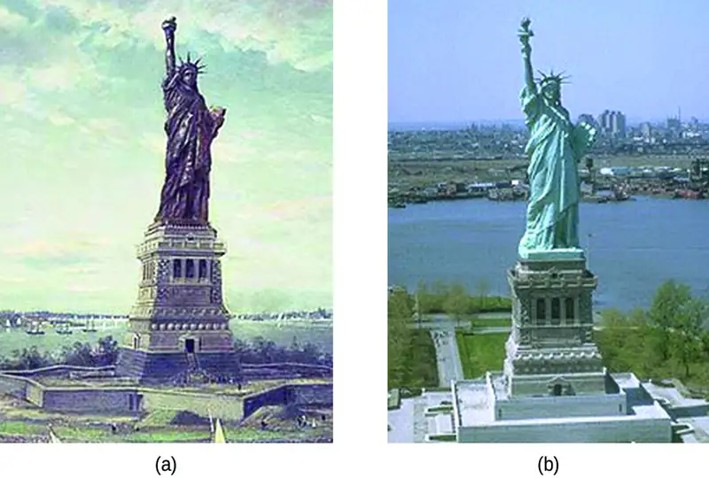

Chapter 17: Electrochemistry¶
Introduction¶
Learning Objectives
- Balancing Oxidation-Reduction Reactions
- Galvanic Cells
- Standard Reduction Potentials
- The Nernst Equation
- Batteries and Fuel Cells
- Corrosion
- Electrolysis
Another chapter in this text introduced the chemistry of reduction-oxidation (redox) reactions. This important reaction class is defined by changes in oxidation states for one or more reactant elements, and it includes a subset of reactions involving the transfer of electrons between reactant species. Around the turn of the nineteenth century, chemists began exploring ways these electrons could be transferred indirectly via an external circuit rather than directly via intimate contact of redox reactants. In the two centuries since, the field of electrochemistry has evolved to yield significant insights on the fundamental aspects of redox chemistry as well as a wealth of technologies ranging from industrial-scale metallurgical processes to robust, rechargeable batteries for electric vehicles (Figure 17.1). In this chapter, the essential concepts of electrochemistry will be addressed.
17.1 Review of Redox Chemistry¶
Learning Objectives
By the end of this section, you will be able to:
- Describe defining traits of redox chemistry
- Identify the oxidant and reductant of a redox reaction
- Balance chemical equations for redox reactions using the half-reaction method
Since reactions involving electron transfer are essential to the topic of electrochemistry, a brief review of redox chemistry is provided here that summarizes and extends the content of an earlier text chapter (see chapter on reaction stoichiometry). Readers wishing additional review are referred to the text chapter on reaction stoichiometry.
Oxidation Numbers¶
By definition, a redox reaction is one that entails changes in oxidation number (or oxidation state) for one or more of the elements involved. The oxidation number of an element in a compound is essentially an assessment of how the electronic environment of its atoms is different in comparison to atoms of the pure element. By this description, the oxidation number of an atom in an element is equal to zero. For an atom in a compound, the oxidation number is equal to the charge the atom would have in the compound if the compound were ionic. Consequential to these rules, the sum of oxidation numbers for all atoms in a molecule is equal to the charge on the molecule. To illustrate this formalism, examples from the two compound classes, ionic and covalent, will be considered.
Simple ionic compounds present the simplest examples to illustrate this formalism, since by definition the elements’ oxidation numbers are numerically equivalent to ionic charges. Sodium chloride, NaCl, is comprised of Na+ cations and Cl− anions, and so oxidation numbers for sodium and chlorine are, +1 and −1, respectively. Calcium fluoride, CaF2, is comprised of Ca2+ cations and F− anions, and so oxidation numbers for calcium and fluorine are, +2 and −1, respectively.
Covalent compounds require a more challenging use of the formalism. Water is a covalent compound whose molecules consist of two H atoms bonded separately to a central O atom via polar covalent O−H bonds. The shared electrons comprising an O−H bond are more strongly attracted to the more electronegative O atom, and so it acquires a partial negative charge in the water molecule (relative to an O atom in elemental oxygen). Consequently, H atoms in a water molecule exhibit partial positive charges compared to H atoms in elemental hydrogen. The sum of the partial negative and partial positive charges for each water molecule is zero, and the water molecule is neutral.
Imagine that the polarization of shared electrons within the O−H bonds of water were 100% complete—the result would be transfer of electrons from H to O, and water would be an ionic compound comprised of O2− anions and H+ cations. And so, the oxidations numbers for oxygen and hydrogen in water are −2 and +1, respectively. Applying this same logic to carbon tetrachloride, CCl4, yields oxidation numbers of +4 for carbon and −1 for chlorine. In the nitrate ion, \(\text{NO}_{{}_{3}}^{-}\), the oxidation number for nitrogen is +5 and that for oxygen is −2, summing to equal the 1− charge on the molecule:
Balancing Redox Equations¶
The unbalanced equation below describes the decomposition of molten sodium chloride:
This reaction satisfies the criterion for redox classification, since the oxidation number for Na is decreased from +1 to 0 (it undergoes reduction) and that for Cl is increased from −1 to 0 (it undergoes oxidation). The equation in this case is easily balanced by inspection, requiring stoichiometric coefficients of 2 for the NaCl and Na:
Redox reactions that take place in aqueous solutions are commonly encountered in electrochemistry, and many involve water or its characteristic ions, H+(aq) and OH−(aq), as reactants or products. In these cases, equations representing the redox reaction can be very challenging to balance by inspection, and the use of a systematic approach called the half-reaction method is helpful. This approach involves the following steps:
- Write skeletal equations for the oxidation and reduction half-reactions.
- Balance each half-reaction for all elements except H and O.
- Balance each half-reaction for O by adding H2O.
- Balance each half-reaction for H by adding H+.
- Balance each half-reaction for charge by adding electrons.
- If necessary, multiply one or both half-reactions so that the number of electrons consumed in one is equal to the number produced in the other.
- Add the two half-reactions and simplify.
- If the reaction takes place in a basic medium, add OH− ions the equation obtained in step 7 to neutralize the H+ ions (add in equal numbers to both sides of the equation) and simplify.
The examples below demonstrate the application of this method to balancing equations for aqueous redox reactions.
Example 17.1 Balancing Equations for Redox Reactions in Acidic Solutions
Write the balanced equation representing reaction between solid copper and nitric acid to yield aqueous copper(II) ions and nitrogen monoxide gas.
Solution
Following the steps of the half-reaction method:
- Write skeletal equations for the oxidation and reduction half-reactions.
\(\text{oxidation:}\hspace{3em}\text{Cu}(s)\:\longrightarrow\:\text{Cu}^{2+}(aq)\)
\(\text{reduction:}\hspace{3em}\text{HNO}_{3}(aq)\:\longrightarrow\:\text{NO}(g)\) - Balance each half-reaction for all elements except H and O.
\(\text{oxidation:}\hspace{3em}\text{Cu}(s)\:\longrightarrow\:\text{Cu}^{2+}(aq)\)
\(\text{reduction:}\hspace{3em}\text{HNO}_{3}(aq)\:\longrightarrow\:\text{NO}(g)\) - Balance each half-reaction for O by adding H2O.
\(\text{oxidation:}\hspace{3em}\text{Cu}(s)\:\longrightarrow\:\text{Cu}^{2+}(aq)\)
\(\text{reduction:}\hspace{3em}\text{HNO}_{3}(aq)\:\longrightarrow\:\text{NO}(g)\mathbf{\:+\:\text{2H}_{2}\text{O}(l)}\) - Balance each half-reaction for H by adding H+.
\(\text{oxidation:}\hspace{3em}\text{Cu}(s)\:\longrightarrow\:\text{Cu}^{2+}(aq)\)
\(\text{reduction:}\hspace{3em}\mathbf{\text{3H}^{\text{+}}(\mathit{aq})+}\text{HNO}_{3}(aq)\:\longrightarrow\:\text{NO}(g)+\text{2H}_{2}\text{O}(l)\) - Balance each half-reaction for charge by adding electrons.
\(\text{oxidation:}\hspace{3em}\text{Cu}(s)\:\longrightarrow\:\text{Cu}^{2+}(aq)\mathbf{\:+\:2\text{e}^{-}}\)
\(\text{reduction:}\hspace{3em}\mathbf{3\text{e}^{-}+}3\text{H}^{\text{+}}(aq)+\text{HNO}_{3}(aq)\:\longrightarrow\:\text{NO}(g)+\text{2H}_{2}\text{O}(l)\) - If necessary, multiply one or both half-reactions so that the number of electrons consumed in one is equal to the number produced in the other.
\(\text{oxidation (×3):}\hspace{3em}\mathbf{3}\text{Cu}(s)\:\longrightarrow\:\mathbf{3}\text{Cu}^{2+}(aq)+\mathbf{6}\cancel{2}\text{e}^{-}\)
\(\text{reduction (×2):}\hspace{3em}\mathbf{6}\cancel{3}\text{e}^{-}+\mathbf{6}\cancel{3}\text{H}^{\text{+}}(aq)+\mathbf{2}\text{HNO}_{3}(aq)\:\longrightarrow\:\mathbf{2}\text{NO}(g)+\mathbf{4}\cancel{2}\text{H}_{2}\text{O}(l)\) - Add the two half-reactions and simplify.
\(3\text{Cu}(s)+\mathbf{\cancel{6}\text{e}^{-}}+6\text{H}^{\text{+}}(aq)+2\text{HNO}_{3}(aq)\:\longrightarrow\:3\text{Cu}^{2+}(aq)+\mathbf{\cancel{6}\text{e}^{-}}+2\text{NO}(g)+4\text{H}_{2}\text{O}(l)\)
\(3\text{Cu}(s)+6\text{H}^{\text{+}}(aq)+2\text{HNO}_{3}(aq)\:\longrightarrow\:3\text{Cu}^{2+}(aq)+2\text{NO}(g)+4\text{H}_{2}\text{O}(l)\) - If the reaction takes place in a basic medium, add OH− ions the equation obtained in step 7 to neutralize the H+ ions (add in equal numbers to both sides of the equation) and simplify.
This step not necessary since the solution is stipulated to be acidic.
The balanced equation for the reaction in an acidic solution is then
Check Your Learning
The reaction above results when using relatively diluted nitric acid. If concentrated nitric acid is used, nitrogen dioxide is produced instead of nitrogen monoxide. Write a balanced equation for this reaction.
Answer:
\(\text{Cu}(s)+2\text{H}^{\text{+}}(aq)+2\text{HNO}_{3}(aq)\:\longrightarrow\:\text{Cu}^{2+}(aq)+2\text{NO}_{2}(g)+2\text{H}_{2}\text{O}(l)\)
Example 17.2 Balancing Equations for Redox Reactions in Basic Solutions
Write the balanced equation representing reaction between aqueous permanganate ion, \(\text{MnO}_{4}{}^{-}\), and solid chromium(III) hydroxide, Cr(OH)3, to yield solid manganese(IV) oxide, MnO2, and aqueous chromate ion, \(\text{CrO}_{4}{}^{2-}\) The reaction takes place in a basic solution.
Solution
Following the steps of the half-reaction method:
- Write skeletal equations for the oxidation and reduction half-reactions.
\(\text{oxidation:}\hspace{3em}\text{Cr(OH)}_{3}(s)\:\longrightarrow\:\text{CrO}_{4}{}^{2-}(aq)\)
\(\text{reduction:}\hspace{3em}\text{MnO}_{4}{}^{-}(aq)\:\longrightarrow\:\text{MnO}_{2}(s)\) - Balance each half-reaction for all elements except H and O.
\(\text{oxidation:}\hspace{3em}\text{Cr(OH)}_{3}(s)\:\longrightarrow\:\text{CrO}_{4}{}^{2-}(aq)\)
\(\text{reduction:}\hspace{3em}\text{MnO}_{4}{}^{-}(aq)\:\longrightarrow\:\text{MnO}_{2}(s)\) - Balance each half-reaction for O by adding H2O.
\(\text{oxidation:}\hspace{3em}\mathbf{\text{H}_{2}\text{O}(l)+}\text{Cr}(\text{OH}{)}_{3}(s)\:\longrightarrow\:\text{CrO}_{4}{}^{2-}(aq)\)
\(\text{reduction:}\hspace{3em}\text{MnO}_{4}{}^{-}(aq)\:\longrightarrow\:\text{MnO}_{2}(s)\mathbf{\:+\:2\text{H}_{2}\text{O}(l)}\) - Balance each half-reaction for H by adding H+.
\(\text{oxidation:}\hspace{3em}\text{H}_{2}\text{O}(l)+\text{Cr}(\text{OH}{)}_{3}(s)\:\longrightarrow\:\text{CrO}_{4}{}^{2-}(aq)\mathbf{\:+\:5\text{H}^{\text{+}}(\boldsymbol{\mathrm{aq}})}\)
\(\text{reduction:}\hspace{3em}\mathbf{4\text{H}^{\text{+}}(\boldsymbol{\mathrm{aq}})+}\text{MnO}_{4}{}^{-}(aq)\:\longrightarrow\:\text{MnO}_{2}(s)+2\text{H}_{2}\text{O}(l)\) - Balance each half-reaction for charge by adding electrons.
\(\text{oxidation:}\hspace{3em}\text{H}_{2}\text{O}(l)+\text{Cr}(\text{OH}{)}_{3}(s)\:\longrightarrow\:\text{CrO}_{4}{}^{2-}(aq)+5\text{H}^{\text{+}}(aq)\mathbf{\:+\:3\text{e}^{-}}\)
\(\text{reduction:}\hspace{3em}\mathbf{3\text{e}^{-}+}4\text{H}^{\text{+}}(aq)+\text{MnO}_{4}{}^{-}(aq)\:\longrightarrow\:\text{MnO}_{2}(s)+2\text{H}_{2}\text{O}(l)\) - If necessary, multiply one or both half-reactions so that the number of electrons consumed in one is equal to the number produced in the other.
This step is not necessary since the number of electrons is already in balance. - Add the two half-reactions and simplify.
\(\begin{array}{cc} \mathbf{\cancel{\text{H}_{2}\text{O}(\boldsymbol{l})}}+\text{Cr(OH)}_{3}(s)\mathbf{+\cancel{3\text{e}^{-}}}+\mathbf{\cancel{4\text{H}^{\text{+}}(\boldsymbol{\mathrm{aq}})}}+\text{MnO}_{4}{}^{-}(aq)\:\longrightarrow\: & \text{CrO}_{4}{}^{2-}(aq)+\mathbf{\cancel{5}}\text{H}^{\text{+}}(aq) \\ & +\mathbf{\cancel{3\text{e}^{-}}}+\text{MnO}_{2}(s)+\mathbf{2}\text{H}_{2}\text{O}(l) \end{array}\)
\(\text{Cr}{(\text{OH})}_{3}(s)+\text{MnO}_{4}{}^{-}(aq)\:\longrightarrow\:\text{CrO}_{4}{}^{2-}(aq)+\text{H}^{\text{+}}(aq)+\text{MnO}_{2}(s)+\text{H}_{2}\text{O}(l)\) - If the reaction takes place in a basic medium, add OH− ions the equation obtained in step 7 to neutralize the H+ ions (add in equal numbers to both sides of the equation) and simplify.
\(\mathbf{\text{OH}^{-}(\boldsymbol{\mathrm{aq}})+}\text{Cr(OH)}_{3}(s)+\text{MnO}_{4}{}^{-}(aq)\:\longrightarrow\:\text{CrO}_{4}{}^{2-}(aq)+\text{H}^{\text{+}}(aq)\mathbf{\:+\:\text{OH}^{-}(\boldsymbol{\mathrm{aq}})}+\text{MnO}_{2}(s)+\text{H}_{2}\text{O}(l)\)
\(\text{OH}^{-}(aq)+\text{Cr(OH)}_{3}(s)+\text{MnO}_{4}{}^{-}(aq)\:\longrightarrow\:\text{CrO}_{4}{}^{2-}(aq)+\text{MnO}_{2}(s)+2\text{H}_{2}\text{O}(l)\)
Check Your Learning
Aqueous permanganate ion may also be reduced using aqueous bromide ion, Br−, the products of this reaction being solid manganese(IV) oxide and aqueous bromate ion, BrO3−. Write the balanced equation for this reaction occurring in a basic medium.
Answer:
\(\text{H}_{2}\text{O}(l)+\text{2MnO}_{4}{}^{-}(aq)+\text{Br}^{-}(aq)\:\longrightarrow\:2\text{MnO}_{2}(s)+\text{BrO}_{3}{}^{-}(aq)+2\text{OH}^{-}(aq)\)
17.2 Galvanic Cells¶
Learning Objectives
By the end of this section, you will be able to:
- Describe the function of a galvanic cell and its components
- Use cell notation to symbolize the composition and construction of galvanic cells
As demonstration of spontaneous chemical change, Figure 17.2 shows the result of immersing a coiled wire of copper into an aqueous solution of silver nitrate. A gradual but visually impressive change spontaneously occurs as the initially colorless solution becomes increasingly blue, and the initially smooth copper wire becomes covered with a porous gray solid.
![This figure includes three photographs. In the first, a test tube containing a clear, colorless liquid is shown with a loosely coiled copper wire outside the test tube to its right. In the second, the wire has been submerged in the clear colorless liquid in the test tube and the surface of the wire is darkened. In the third, the liquid in the test tube is bright blue-green, the wire in the solution appears dark near the top, and a gray “fuzzy” material is present at the bottom of the test tube on the lower portion of the copper coil, giving a murky appearance to the liquid near the bottom of the test tube.](img/cnx-chem-17-02-cuag.webp)
These observations are consistent with (i) the oxidation of elemental copper to yield copper(II) ions, Cu2+(aq), which impart a blue color to the solution, and (ii) the reduction of silver(I) ions to yield elemental silver, which deposits as a fluffy solid on the copper wire surface. And so, the direct transfer of electrons from the copper wire to the aqueous silver ions is spontaneous under the employed conditions. A summary of this redox system is provided by these equations:
Consider the construction of a device that contains all the reactants and products of a redox system like the one here, but prevents physical contact between the reactants. Direct transfer of electrons is, therefore, prevented; transfer, instead, takes place indirectly through an external circuit that contacts the separated reactants. Devices of this sort are generally referred to as electrochemical cells, and those in which a spontaneous redox reaction takes place are called galvanic cells (or voltaic cells).
A galvanic cell based on the spontaneous reaction between copper and silver(I) is depicted in Figure 17.3. The cell is comprised of two half-cells, each containing the redox conjugate pair (“couple”) of a single reactant. The half-cell shown at the left contains the Cu(0)/Cu(II) couple in the form of a solid copper foil and an aqueous solution of copper nitrate. The right half-cell contains the Ag(I)/Ag(0) couple as solid silver foil and an aqueous silver nitrate solution. An external circuit is connected to each half-cell at its solid foil, meaning the Cu and Ag foil each function as an electrode. By definition, the anode of an electrochemical cell is the electrode at which oxidation occurs (in this case, the Cu foil) and the cathode is the electrode where reduction occurs (the Ag foil). The redox reactions in a galvanic cell occur only at the interface between each half-cell’s reaction mixture and its electrode. To keep the reactants separate while maintaining charge-balance, the two half-cell solutions are connected by a tube filled with inert electrolyte solution called a salt bridge. The spontaneous reaction in this cell produces Cu2+ cations in the anode half-cell and consumes Ag+ ions in the cathode half-cell, resulting in a compensatory flow of inert ions from the salt bridge that maintains charge balance. Increasing concentrations of Cu2+ in the anode half-cell are balanced by an influx of NO3− from the salt bridge, while a flow of Na+ into the cathode half-cell compensates for the decreasing Ag+ concentration.
![This figure contains a diagram of an electrochemical cell. Two beakers are shown. Each is just over half full. The beaker on the left contains a blue solution and is labeled below as “1 M solution of copper (II) nitrate ( C u ( N O subscript 3 ) subscript 2 ).” The beaker on the right contains a colorless solution and is labeled below as “1 M solution of silver nitrate ( A g N O subscript 3 ).” A glass tube in the shape of an inverted U connects the two beakers at the center of the diagram. The tube contents are colorless. The ends of the tubes are beneath the surface of the solutions in the beakers and a small gray plug is present at each end of the tube. The plug in the left beaker is labeled “Porous plug.” At the center of the diagram, the tube is labeled “Salt bridge ( N a N O subscript 3 ). Each beaker shows a metal strip partially submerged in the liquid. The beaker on the left has an orange-brown strip that is labeled “C u anode negative” at the top. The beaker on the right has a silver strip that is labeled “A g cathode positive” at the top. A wire extends from the top of each of these strips to a rectangle indicating “external circuit” that is labeled “flow of electrons” with an arrow pointing to the right following. A curved arrow extends from the C u strip into the surrounding solution. The tip of this arrow is labeled “C u superscript 2 plus.” A curved arrow extends from the salt bridge into the beaker on the left into the blue solution. The tip of this arrow is labeled “N O subscript 3 superscript negative.” A curved arrow extends from the solution in the beaker on the right to the A g strip. The base of this arrow is labeled “A g superscript plus.” A curved arrow extends from the colorless solution to salt bridge in the beaker on the right. The base of this arrow is labeled “N O subscript 3 superscript negative.” Just right of the salt bridge in the colorless solution is the label “N a superscript plus.” Just above this region of the tube appears the label “Flow of cations.” Just left of the salt bridge in the blue solution is the label “N O subscript 3 superscript negative.” Just above this region of the tube appears the label “Flow of anions.”](img/cnx-chem-17-02-galvanicel.webp)
Cell Notation¶
Abbreviated symbolism is commonly used to represent a galvanic cell by providing essential information on its composition and structure. These symbolic representations are called cell notations or cell schematics, and they are written following a few guidelines:
- The relevant components of each half-cell are represented by their chemical formulas or element symbols
- All interfaces between component phases are represented by vertical parallel lines; if two or more components are present in the same phase, their formulas are separated by commas
- By convention, the schematic begins with the anode and proceeds left-to-right identifying phases and interfaces encountered within the cell, ending with the cathode
A verbal description of the cell as viewed from anode-to-cathode is often a useful first-step in writing its schematic. For example, the galvanic cell shown in Figure 17.3 consists of a solid copper anode immersed in an aqueous solution of copper(II) nitrate that is connected via a salt bridge to an aqueous silver(I) nitrate solution, immersed in which is a solid silver cathode. Converting this statement to symbolism following the above guidelines results in the cell schematic:
Consider a different galvanic cell (see Figure 17.4) based on the spontaneous reaction between solid magnesium and aqueous iron(III) ions:
In this cell, a solid magnesium anode is immersed in an aqueous solution of magnesium chloride that is connected via a salt bridge to an aqueous solution containing a mixture of iron(III) chloride and iron(II) chloride, immersed in which is a platinum cathode. The cell schematic is then written as
Notice the cathode half-cell is different from the others considered thus far in that its electrode is comprised of a substance (Pt) that is neither a reactant nor a product of the cell reaction. This is required when neither member of the half-cell’s redox couple can reasonably function as an electrode, which must be electrically conductive and in a phase separate from the half-cell solution. In this case, both members of the redox couple are solute species, and so Pt is used as an inert electrode that can simply provide or accept electrons to redox species in solution. Electrodes constructed from a member of the redox couple, such as the Mg anode in this cell, are called active electrodes.
![This figure contains a diagram of an electrochemical cell. Two beakers are shown. Each is just over half full. The beaker on the left contains a colorless solution. The beaker on the right also contains a colorless solution. A glass tube in the shape of an inverted U connects the two beakers at the center of the diagram. The tube contents are colorless. The ends of the tubes are beneath the surface of the solutions in the beakers and a small gray plug is present at each end of the tube. At the center of the diagram, the tube is labeled “Salt bridge.” Each beaker shows a metal coils submerged in the liquid. The beaker on the left has a thin, gray, coiled strip that is labeled “M g anode.” The beaker on the right has a black wire that is oriented horizontally and coiled up in a spring-like appearance that is labeled “P t cathode.” Below the coil is the label “F e superscript 3 plus” with a curved right arrowing pointing from that to the label “F e superscript 2 plus.” A wire extends across the top of the diagram that connects the ends of the M g strip and P t cathode just above the opening of each beaker. At the center of the wire above the two beakers is a rectangle labeled “external circuit.” Above the rectangle is the label “flow of electrons” followed by a right pointing arrow. An arrow points down and to the right from the label “N a superscript plus” at the upper right region of the salt bride. An arrow points down and to the left from the label “C l superscript negative” at the upper left region of the salt bride. Below the graylug at the left end of the salt bridge in the surrounding solution in the left beaker is the label “C l superscript negative.” Below the coil on this side is a right arrow and the label “M g superscript 2 plus.” The label “0.1 M M g C l subscript 2” appears beneath the left beaker. The label “0.2 M F e C l subscript 3 and 0.3 M F e C l subscript 2.” appears beneath the right beaker.](img/cnx-chem-17-02-oxidareduc.webp)
Example 17.3 Writing Galvanic Cell Schematics
A galvanic cell is fabricated by connecting two half-cells with a salt bridge, one in which a chromium wire is immersed in a 1 M CrCl3 solution and another in which a copper wire is immersed in 1 M CuCl2. Assuming the chromium wire functions as an anode, write the schematic for this cell along with equations for the anode half-reaction, the cathode half-reaction, and the overall cell reaction.
Solution
Since the chromium wire is stipulated to be the anode, the schematic begins with it and proceeds left-to-right, symbolizing the other cell components until ending with the copper wire cathode:
The half-reactions for this cell are
Multiplying to make the number of electrons lost by Cr and gained by Cu2+ equal yields
Adding the half-reaction equations and simplifying yields an equation for the cell reaction:
Check Your Learning
Omitting solute concentrations and spectator ion identities, write the schematic for a galvanic cell whose net cell reaction is shown below.
Answer:
\(\text{Zn}(s)│\text{Zn}^{2+}(aq)║\text{Sn}^{4+}(aq),\text{Sn}^{2+}(aq)│\text{Pt}(s)\)
17.3 Electrode and Cell Potentials¶
Learning Objectives
By the end of this section, you will be able to:
- Describe and relate the definitions of electrode and cell potentials
- Interpret electrode potentials in terms of relative oxidant and reductant strengths
- Calculate cell potentials and predict redox spontaneity using standard electrode potentials
Unlike the spontaneous oxidation of copper by aqueous silver(I) ions described in section 17.2, immersing a copper wire in an aqueous solution of lead(II) ions yields no reaction. The two species, Ag+(aq) and Pb2+(aq), thus show a distinct difference in their redox activity towards copper: the silver ion spontaneously oxidized copper, but the lead ion did not. Electrochemical cells permit this relative redox activity to be quantified by an easily measured property, potential. This property is more commonly called voltage when referenced in regard to electrical applications, and it is a measure of energy accompanying the transfer of charge. Potentials are measured in the volt unit, defined as one joule of energy per one coulomb of charge, V = J/C.
When measured for purposes of electrochemistry, a potential reflects the driving force for a specific type of charge transfer process, namely, the transfer of electrons between redox reactants. Considering the nature of potential in this context, it is clear that the potential of a single half-cell or a single electrode can’t be measured; “transfer” of electrons requires both a donor and recipient, in this case a reductant and an oxidant, respectively. Instead, a half-cell potential may only be assessed relative to that of another half-cell. It is only the difference in potential between two half-cells that may be measured, and these measured potentials are called cell potentials, Ecell, defined as
where Ecathode and Eanode are the potentials of two different half-cells functioning as specified in the subscripts. As for other thermodynamic quantities, the standard cell potential, E°cell, is a cell potential measured when both half-cells are under standard-state conditions (1 M concentrations, 1 bar pressures, 298 K):
To simplify the collection and sharing of potential data for half-reactions, the scientific community has designated one particular half-cell to serve as a universal reference for cell potential measurements, assigning it a potential of exactly 0 V. This half-cell is the standard hydrogen electrode (SHE) and it is based on half-reaction below:
A typical SHE contains an inert platinum electrode immersed in precisely 1 M aqueous H+ and a stream of bubbling H2 gas at 1 bar pressure, all maintained at a temperature of 298 K (see Figure 17.5).
![The figure shows a beaker just over half full of a blue liquid. A glass tube is partially submerged in the liquid. Bubbles, which are labeled “H subscript 2 ( g )” are rising from the dark grayquare, labeled “P t electrode” at the bottom of the tube. Below the bottom of the tube pointing to the solution in the beaker is the label “ 1 M H superscript plus ( a q).” A curved arrow points up to the right, indicating the direction of the bubbles. A black wire which is labeled “P t wire” extends from the dark grgrayare up the interior of the tube through a small port at the top. A second small port extends out the top of the tube to the left. An arrow points to the port opening from the left. The base of this arrow is labeled “H subscript 2 ( g ) at 1 a t m.” A light greygray points to a diagram in a circle at the right that illustrates the surface of the P t electrode in a magnified view. P t atoms are illustrated as a uniform cluster of grey sgray which are labeled “P t electrode atoms.” On the grey atograyace, the label “e superscript negative” is shown 4 times in a nearly even vertical distribution to show electrons on the P t surface. A curved arrow extends from a white sphere labeled “H superscript plus” at the right of the P t atoms to the uppermost electron shown. Just below, a straight arrow extends from the P t surface to the right to a pair of linked white spheres which are labeled “H subscript 2.” A curved arrow extends from a second white sphere labeled “H superscript plus” at the right of the P t atoms to the second electron shown. A curved arrow extends from the third electron on the P t surface to the right to a white sphere labeled “H superscript plus.” Just below, an arrow points left from a pair of linked white spheres which are labeled “H subscript 2” to the P t surface. A curved arrow extends from the fourth electron on the P t surface to the right to a white sphere labeled “H superscript plus.”](img/cnx-chem-17-03-she.webp)
The assigned potential of the SHE permits the definition of a conveniently measured potential for a single half-cell. The electrode potential (EX) for a half-cell X is defined as the potential measured for a cell comprised of X acting as cathode and the SHE acting as anode:
When the half-cell X is under standard-state conditions, its potential is the standard electrode potential, E°X. Since the definition of cell potential requires the half-cells function as cathodes, these potentials are sometimes called standard reduction potentials.
This approach to measuring electrode potentials is illustrated in Figure 17.6, which depicts a cell comprised of an SHE connected to a copper(II)/copper(0) half-cell under standard-state conditions. A voltmeter in the external circuit allows measurement of the potential difference between the two half-cells. Since the Cu half-cell is designated as the cathode in the definition of cell potential, it is connected to the red (positive) input of the voltmeter, while the designated SHE anode is connected to the black (negative) input. These connections insure that the sign of the measured potential will be consistent with the sign conventions of electrochemistry per the various definitions discussed above. A cell potential of +0.337 V is measured, and so
Tabulations of E° values for other half-cells measured in a similar fashion are available as reference literature to permit calculations of cell potentials and the prediction of the spontaneity of redox processes.
![This figure contains a diagram of an electrochemical cell. Two beakers are shown. Each is just over half full. The beaker on the left contains a clear, colorless solution and is labeled below as “1 M H superscript plus.” The beaker on the right contains a blue solution and is labeled below as “1 M C u superscript 2 plus.” A glass tube in the shape of an inverted U connects the two beakers at the center of the diagram. The tube contents are colorless. The ends of the tubes are beneath the surface of the solutions in the beakers and a small graylug is present at each end of the tube. The beaker on the left has a glass tube partially submersed in the liquid. Bubbles are rising from the gray square, labeled “Standard hydrogen electrode” at the bottom of the tube. A curved arrow points up to the right, indicating the direction of the bubbles. A black wire extends from the gray square up the interior of the tube through a small port at the top to a rectangle with a digital readout of “positive 0.337 V,” which is labeled “Voltmeter.” A second small port extends out the top of the tube to the left. An arrow points to the port opening from the left. The base of this arrow is labeled “1 a t m H subscript 2 ( g ).” The beaker on the right has an orange-brown strip that is labeled “C u electrode” at the top. A wire extends from the top of this strip to the voltmeter. An arrow points toward the voltmeter from the left which is labeled “e superscript negative flow.” Similarly, an arrow points away from the voltmeter to the right. A curved arrow extends from the surrounding solution to the standard hydrogen electrode in the beaker. The end of the arrow is labeled “H subscript 2” and tip of this arrow is labeled “2 H superscript plus.” A curved arrow extends from the “C u superscript 2 plus” label in the solution to a “C u” label at the lower edge of the C u electrode. Between the two beakers is the label “T equals 298 K.”](img/cnx-chem-17-03-galvancu.webp)
Table 17.1 provides a listing of standard electrode potentials for a selection of half-reactions in numerical order, and a more extensive alphabetical listing is given in Appendix L.
Table 17.1
| Selected Standard Reduction Potentials at 25 °C | |
|---|---|
| Half-Reaction | E° (V) |
| \(\text{F}_{2}(g)+\text{2e}^{-}\:\longrightarrow\:\text{2F}^{-}(aq)\) | +2.866 |
| \(\text{PbO}_{2}(s)+\text{SO}_{4}{}^{2-}(aq)+\text{4H}^{\text{+}}(aq)+\text{2e}^{-}\:\longrightarrow\:\text{PbSO}_{4}(s)+\text{2H}_{2}\text{O}(l)\) | +1.69 |
| \(\text{MnO}_{4}{}^{-}(aq)+\text{8H}^{\text{+}}(aq)+\text{5e}^{-}\:\longrightarrow\:\text{Mn}^{2+}(aq)+\text{4H}_{2}\text{O}(l)\) | +1.507 |
| \(\text{Au}^{3+}(aq)+\text{3e}^{-}\:\longrightarrow\:\text{Au}(s)\) | +1.498 |
| \(\text{Cl}_{2}(g)+\text{2e}^{-}\:\longrightarrow\:\text{2Cl}^{-}(aq)\) | +1.35827 |
| \(\text{O}_{2}(g)+\text{4H}^{\text{+}}(aq)+\text{4e}^{-}\:\longrightarrow\:\text{2H}_{2}\text{O}(l)\) | +1.229 |
| \(\text{Pt}^{2+}(aq)+\text{2e}^{-}\:\longrightarrow\:\text{Pt}(s)\) | +1.20 |
| \(\text{Br}_{2}(aq)+\text{2e}^{-}\:\longrightarrow\:\text{2Br}^{-}(aq)\) | +1.0873 |
| \(\text{Ag}^{\text{+}}(aq)+\text{e}^{-}\:\longrightarrow\:\text{Ag}(s)\) | +0.7996 |
| \(\text{Hg}_{2}{}^{2+}(aq)+\text{2e}^{-}\:\longrightarrow\:\text{2Hg}(l)\) | +0.7973 |
| \(\text{Fe}^{3+}(aq)+\text{e}^{-}\:\longrightarrow\:\text{Fe}^{2+}(aq)\) | +0.771 |
| \(\text{MnO}_{4}{}^{-}(aq)+\text{2H}_{2}\text{O}(l)+\text{3e}^{-}\:\longrightarrow\:\text{MnO}_{2}(s)+\text{4OH}^{-}(aq)\) | +0.558 |
| \(\text{I}_{2}(s)+\text{2e}^{-}\:\longrightarrow\:\text{2I}^{-}(aq)\) | +0.5355 |
| \(\text{NiO}_{2}(s)+\text{2H}_{2}\text{O}(l)+\text{2e}^{-}\:\longrightarrow\:\text{Ni(OH)}_{2}(s)+\text{2OH}^{-}(aq)\) | +0.49 |
| \(\text{Cu}^{2+}(aq)+\text{2e}^{-}\:\longrightarrow\:\text{Cu}(s)\) | +0.34 |
| \(\text{Hg}_{2}\text{Cl}_{2}(s)+\text{2e}^{-}\:\longrightarrow\:\text{2Hg}(l)+\text{2Cl}^{-}(aq)\) | +0.26808 |
| \(\text{AgCl}(s)+\text{e}^{-}\:\longrightarrow\:\text{Ag}(s)+\text{Cl}^{-}(aq)\) | +0.22233 |
| \(\text{Sn}^{4+}(aq)+\text{2e}^{-}\:\longrightarrow\:\text{Sn}^{2+}(aq)\) | +0.151 |
| \(\text{2H}^{\text{+}}(aq)+\text{2e}^{-}\:\longrightarrow\:\text{H}_{2}(g)\) | 0.00 |
| \(\text{Pb}^{2+}(aq)+\text{2e}^{-}\:\longrightarrow\:\text{Pb}(s)\) | −0.1262 |
| \(\text{Sn}^{2+}(aq)+\text{2e}^{-}\:\longrightarrow\:\text{Sn}(s)\) | −0.1375 |
| \(\text{Ni}^{2+}(aq)+\text{2e}^{-}\:\longrightarrow\:\text{Ni}(s)\) | −0.257 |
| \(\text{Co}^{2+}(aq)+\text{2e}^{-}\:\longrightarrow\:\text{Co}(s)\) | −0.28 |
| \(\text{PbSO}_{4}(s)+\text{2e}^{-}\:\longrightarrow\:\text{Pb}(s)+\text{SO}_{4}{}^{2-}(aq)\) | −0.3505 |
| \(\text{Cd}^{2+}(aq)+\text{2e}^{-}\:\longrightarrow\:\text{Cd}(s)\) | −0.4030 |
| \(\text{Fe}^{2+}(aq)+\text{2e}^{-}\:\longrightarrow\:\text{Fe}(s)\) | −0.447 |
| \(\text{Cr}^{3+}(aq)+\text{3e}^{-}\:\longrightarrow\:\text{Cr}(s)\) | −0.744 |
| \(\text{Mn}^{2+}(aq)+\text{2e}^{-}\:\longrightarrow\:\text{Mn}(s)\) | −1.185 |
| \(\text{Zn(OH)}_{2}(s)+\text{2e}^{-}\:\longrightarrow\:\text{Zn}(s)+\text{2OH}^{-}(aq)\) | −1.245 |
| \(\text{Zn}^{2+}(aq)+\text{2e}^{-}\:\longrightarrow\:\text{Zn}(s)\) | −0.7618 |
| \(\text{Al}^{3+}(aq)+\text{3e}^{-}\:\longrightarrow\:\text{Al}(s)\) | −1.662 |
| \(\text{Mg}^{2}(aq)+\text{2e}^{-}\:\longrightarrow\:\text{Mg}(s)\) | −2.372 |
| \(\text{Na}^{\text{+}}(aq)+\text{e}^{-}\:\longrightarrow\:\text{Na}(s)\) | −2.71 |
| \(\text{Ca}^{2+}(aq)+\text{2e}^{-}\:\longrightarrow\:\text{Ca}(s)\) | −2.868 |
| \(\text{Ba}^{2+}(aq)+\text{2e}^{-}\:\longrightarrow\:\text{Ba}(s)\) | −2.912 |
| \(\text{K}^{\text{+}}(aq)+\text{e}^{-}\:\longrightarrow\:\text{K}(s)\) | −2.931 |
| \(\text{Li}^{\text{+}}(aq)+\text{e}^{-}\:\longrightarrow\:\text{Li}(s)\) | −3.04 |
Example 17.4 Calculating Standard Cell Potentials
What is the standard potential of the galvanic cell shown in Figure 17.3?
Solution
The cell in Figure 17.3 is galvanic, the spontaneous cell reaction involving oxidation of its copper anode and reduction of silver(I) ions at its silver cathode:
The standard cell potential computed as
Check Your Learning
What is the standard cell potential expected if the silver cathode half-cell in Figure 17.3 is replaced with a lead half-cell: \(\text{Pb}^{\text{2+}}(aq)+2\text{e}^{-}\:\longrightarrow\:\text{Pb}(s)\)?
Answer:
−0. 47 V
Interpreting Electrode and Cell Potentials¶
Thinking carefully about the definitions of cell and electrode potentials and the observations of spontaneous redox change presented thus far, a significant relation is noted. The previous section described the spontaneous oxidation of copper by aqueous silver(I) ions, but no observed reaction with aqueous lead(II) ions. Results of the calculations in Example 17.4 have just shown the spontaneous process is described by a positive cell potential while the nonspontaneous process exhibits a negative cell potential. And so, with regard to the relative effectiveness (“strength”) with which aqueous Ag+ and Pb2+ ions oxidize Cu under standard conditions, the stronger oxidant is the one exhibiting the greater standard electrode potential, E°. Since by convention electrode potentials are for reduction processes, an increased value of E° corresponds to an increased driving force behind the reduction of the species (hence increased effectiveness of its action as an oxidizing agent on some other species). Negative values for electrode potentials are simply a consequence of assigning a value of 0 V to the SHE, indicating the reactant of the half-reaction is a weaker oxidant than aqueous hydrogen ions.
Applying this logic to the numerically ordered listing of standard electrode potentials in Table 17.1 shows this listing to be likewise in order of the oxidizing strength of the half-reaction’s reactant species, decreasing from strongest oxidant (most positive E°) to weakest oxidant (most negative E°). Predictions regarding the spontaneity of redox reactions under standard state conditions can then be easily made by simply comparing the relative positions of their table entries. By definition, E°cell is positive when E°cathode > E°anode, and so any redox reaction in which the oxidant’s entry is above the reductant’s entry is predicted to be spontaneous.
Reconsideration of the two redox reactions in Example 17.4 provides support for this fact. The entry for the silver(I)/silver(0) half-reaction is above that for the copper(II)/copper(0) half-reaction, and so the oxidation of Cu by Ag+ is predicted to be spontaneous (E°cathode > E°anode and so E°cell > 0). Conversely, the entry for the lead(II)/lead(0) half-cell is beneath that for copper(II)/copper(0), and the oxidation of Cu by Pb2+ is nonspontaneous (E°cathode < E°anode and so E°cell < 0).
Recalling the chapter on thermodynamics, the spontaneities of the forward and reverse reactions of a reversible process show a reciprocal relationship: if a process is spontaneous in one direction, it is non-spontaneous in the opposite direction. As an indicator of spontaneity for redox reactions, the potential of a cell reaction shows a consequential relationship in its arithmetic sign. The spontaneous oxidation of copper by lead(II) ions is not observed,
and so the reverse reaction, the oxidation of lead by copper(II) ions, is predicted to occur spontaneously:
Note that reversing the direction of a redox reaction effectively interchanges the identities of the cathode and anode half-reactions, and so the cell potential is calculated from electrode potentials in the reverse subtraction order than that for the forward reaction. In practice, a voltmeter would report a potential of −0.47 V with its red and black inputs connected to the Pb and Cu electrodes, respectively. If the inputs were swapped, the reported voltage would be +0.47 V.
Example 17.5 Predicting Redox Spontaneity
Are aqueous iron(II) ions predicted to spontaneously oxidize elemental chromium under standard state conditions? Assume the half-reactions to be those available in Table 17.1.
Solution
Referring to the tabulated half-reactions, the redox reaction in question can be represented by the equations below:
The entry for the putative oxidant, Fe2+, appears above the entry for the reductant, Cr, and so a spontaneous reaction is predicted per the quick approach described above. Supporting this predication by calculating the standard cell potential for this reaction gives
The positive value for the standard cell potential indicates the process is spontaneous under standard state conditions.
Check Your Learning
Use the data in Table 17.1 to predict the spontaneity of the oxidation of bromide ion by molecular iodine under standard state conditions, supporting the prediction by calculating the standard cell potential for the reaction. Repeat for the oxidation of iodide ion by molecular bromine.
Answer:
\(\begin{array}{cc} \text{I}_{2}(s)+2\text{Br}^{-}(aq)\:\longrightarrow\:2\text{I}^{-}(aq)+\text{Br}_{2}(l) & \hspace{2.0em}E^{\circ}{}_{\text{cell}}=-0.5518\:\text{V}\:\text{(nonspontaneous)} \\ \text{Br}_{2}(s)+2\text{I}^{-}(aq)\:\longrightarrow\:2\text{Br}^{-}(aq)+\text{I}_{2}(l) & \hspace{2.0em}E^{\circ}{}_{\text{cell}}=+0.5518\:\text{V}\:\text{(spontaneous)} \end{array}\)
17.4 Potential, Free Energy, and Equilibrium¶
Learning Objectives
By the end of this section, you will be able to:
- Explain the relations between potential, free energy change, and equilibrium constants
- Perform calculations involving the relations between cell potentials, free energy changes, and equilibrium
- Use the Nernst equation to determine cell potentials under nonstandard conditions
So far in this chapter, the relationship between the cell potential and reaction spontaneity has been described, suggesting a link to the free energy change for the reaction (see chapter on thermodynamics). The interpretation of potentials as measures of oxidant strength was presented, bringing to mind similar measures of acid-base strength as reflected in equilibrium constants (see the chapter on acid-base equilibria). This section provides a summary of the relationships between potential and the related thermodynamic properties ΔG and K.
E° and ΔG°¶
The standard free energy change of a process, ΔG°, was defined in a previous chapter as the maximum work that could be performed by a system, wmax. In the case of a redox reaction taking place within a galvanic cell under standard state conditions, essentially all the work is associated with transferring the electrons from reductant-to-oxidant, welec:
The work associated with transferring electrons is determined by the total amount of charge (coulombs) transferred and the cell potential:
where n is the number of moles of electrons transferred, F is Faraday’s constant, and E°cell is the standard cell potential. The relation between free energy change and standard cell potential confirms the sign conventions and spontaneity criteria previously discussed for both of these properties: spontaneous redox reactions exhibit positive potentials and negative free energy changes.
E° and K¶
Combining a previously derived relation between ΔG° and K (see the chapter on thermodynamics) and the equation above relating ΔG° and E°cell yields the following:
This equation indicates redox reactions with large (positive) standard cell potentials will proceed far towards completion, reaching equilibrium when the majority of reactant has been converted to product. A summary of the relations between E°, ΔG° and K is depicted in Figure 17.7, and a table correlating reaction spontaneity to values of these properties is provided in Table 17.2.
![A diagram is shown that involves three double headed arrows positioned in the shape of an equilateral triangle. The vertices are labeled in red. The top vertex is labeled “K.“ The vertex at the lower left is labeled “delta G superscript degree symbol.” The vertex at the lower right is labeled “E superscript degree symbol subscript cell.” The right side of the triangle is labeled “E superscript degree symbol subscript cell equals ( R T divided by n F ) l n K.” The lower side of the triangle is labeled “delta G superscript degree symbol equals negative n F E superscript degree symbol subscript cell.” The left side of the triangle is labeled “delta G superscript degree symbol equals negative R T l n K.”](img/cnx-chem-17-04-relation.webp)
Table 17.2
| K | ΔG° | E°cell | |
| > 1 | < 0 | > 0 | Reaction is spontaneous under standard conditions Products more abundant at equilibrium |
| < 1 | > 0 | < 0 | Reaction is non-spontaneous under standard conditions Reactants more abundant at equilibrium |
| = 1 | = 0 | = 0 | Reaction is at equilibrium under standard conditions Reactants and products equally abundant |
Example 17.6 Equilibrium Constants, Standard Cell Potentials, and Standard Free Energy Changes
Use data from Appendix L to calculate the standard cell potential, standard free energy change, and equilibrium constant for the following reaction at 25 °C. Comment on the spontaneity of the forward reaction and the composition of an equilibrium mixture of reactants and products.
Solution
The reaction involves an oxidation-reduction reaction, so the standard cell potential can be calculated using the data in Appendix L.
With n = 2, the equilibrium constant is then
The standard free energy is then
The reaction is spontaneous, as indicated by a negative free energy change and a positive cell potential. The K value is very large, indicating the reaction proceeds to near completion to yield an equilibrium mixture containing mostly products.
Check Your Learning
What is the standard free energy change and the equilibrium constant for the following reaction at room temperature? Is the reaction spontaneous?
Answer:
Spontaneous; n = 2; \(E_{\text{cell}}^{{}^{\circ}}=\text{+0.291 V};\) \(\Delta G{}^{\circ}=-56.2\:\frac{\text{kJ}}{\text{mol}};\) K = 6.8 \(\times\) 109.
Potentials at Nonstandard Conditions: The Nernst Equation¶
Most of the redox processes that interest science and society do not occur under standard state conditions, and so the potentials of these systems under nonstandard conditions are a property worthy of attention. Having established the relationship between potential and free energy change in this section, the previously discussed relation between free energy change and reaction mixture composition can be used for this purpose.
Notice the reaction quotient, Q, appears in this equation, making the free energy change dependent upon the composition of the reaction mixture. Substituting the equation relating free energy change to cell potential yields the Nernst equation:
This equation describes how the potential of a redox system (such as a galvanic cell) varies from its standard state value, specifically, showing it to be a function of the number of electrons transferred, n, the temperature, T, and the reaction mixture composition as reflected in Q. A convenient form of the Nernst equation for most work is one in which values for the fundamental constants (R and F) and standard temperature (298) K), along with a factor converting from natural to base-10 logarithms, have been included:
Example 17.7 Predicting Redox Spontaneity Under Nonstandard Conditions
Use the Nernst equation to predict the spontaneity of the redox reaction shown below.
Solution
Collecting information from Appendix L and the problem,
Notice the negative value of the standard cell potential indicates the process is not spontaneous under standard conditions. Substitution of the Nernst equation terms for the nonstandard conditions yields:
The cell potential remains negative (slightly) under the specified conditions, and so the reaction remains nonspontaneous.
Check Your Learning
For the cell schematic below, identify values for n and Q, and calculate the cell potential, Ecell.
Answer:
n = 6; Q = 1440; Ecell = +1.97 V, spontaneous.
A concentration cell is constructed by connecting two nearly identical half-cells, each based on the same half-reaction and using the same electrode, varying only in the concentration of one redox species. The potential of a concentration cell, therefore, is determined only by the difference in concentration of the chosen redox species. The example problem below illustrates the use of the Nernst equation in calculations involving concentration cells.
Example 17.8 Concentration Cells
What is the cell potential of the concentration cell described by
Solution
From the information given:
Substituting into the Nernst equation,
The positive value for cell potential indicates the overall cell reaction (see above) is spontaneous. This spontaneous reaction is one in which the zinc ion concentration in the cathode falls (it is reduced to elemental zinc) while that in the anode rises (it is produced by oxidation of the zinc anode). A greater driving force for zinc reduction is present in the cathode, where the zinc(II) ion concentration is greater (Ecathode > Eanode).
Check Your Learning
The concentration cell above was allowed to operate until the cell reaction reached equilibrium. What are the cell potential and the concentrations of zinc(II) in each half-cell for the cell now?
Answer:
Ecell = 0.000 V; [Zn2+]cathode = [Zn2+]anode = 0.30 M
17.5 Batteries and Fuel Cells¶
Learning Objectives
By the end of this section, you will be able to:
- Describe the electrochemistry associated with several common batteries
- Distinguish the operation of a fuel cell from that of a battery
There are many technological products associated with the past two centuries of electrochemistry research, none more immediately obvious than the battery. A battery is a galvanic cell that has been specially designed and constructed in a way that best suits its intended use a source of electrical power for specific applications. Among the first successful batteries was the Daniell cell, which relied on the spontaneous oxidation of zinc by copper(II) ions (Figure 17.8):
![This figure contains a patent drawing for an electrochemical cell on the left labelled Element Daniell and a diagram of an electrochemical cell on the right. In the diagram, two beakers are shown. Each is just over half full. The beaker on the left contains a blue solution. The beaker on the right contains a colorless solution. A glass tube in the shape of an inverted U connects the two beakers at the center of the diagram. The tube contents are colorless. The ends of the tubes are beneath the surface of the solutions in the beakers and a small grey plug is present at each end of the tube. The plug in the left beaker is labeled “Porous plug.” Each beaker shows a metal strip partially submerged in the liquid. The beaker on the left has a silver strip that is labeled “Z n anode” at the top. The beaker on the right has an orange brown strip that is labeled “C u cathode” at the top. A wire extends up and toward the center from the top of each of these strips before stopping. The end of the left wire points up to a negative sign. The end of the right wire points up to a positive sign. An arrow points toward the left wire which is labeled “Flow of e superscript negative.” A curved arrow extends from the Z n strip into the surrounding solution. The tip of this arrow is labeled “Z n superscript 2 plus.” A curved arrow extends from the salt bridge into the beaker on the left into the blue solution. The tip of this arrow is labeled “S O subscript 4 superscript 2 negative.” A curved arrow extends from the solution in the beaker on the right to the C u strip. The base of this arrow is labeled “C u superscript 2 plus.” A curved arrow extends from the colorless solution to salt bridge in the beaker on the right. The base of this arrow is labeled “S O subscript 4 superscript 2 negative.” Just right of the center of the salt bridge on the tube an arrow is placed on the salt bridge that points down and to the right. The base of this arrow is labeled “Z n superscript 2 plus.” Just above this region of the tube appears the label “Flow of cations.” Just left of the center of the salt bridge on the tube an arrow is placed on the salt bridge that points down and to the left. The base of this arrow is labeled “S O subscript 4 superscript 2 negative.” Just above this region of the tube appears the label “Flow of anions.”](img/cnx-chem-17-08-daniell.webp)
Modern batteries exist in a multitude of forms to accommodate various applications, from tiny button batteries that provide the modest power needs of a wristwatch to the very large batteries used to supply backup energy to municipal power grids. Some batteries are designed for single-use applications and cannot be recharged (primary cells), while others are based on conveniently reversible cell reactions that allow recharging by an external power source (secondary cells). This section will provide a summary of the basic electrochemical aspects of several batteries familiar to most consumers, and will introduce a related electrochemical device called a fuel cell that can offer improved performance in certain applications.
Link to Learning
Visit this site to learn more about batteries.
Single-Use Batteries¶
A common primary battery is the dry cell, which uses a zinc can as both container and anode (“–” terminal) and a graphite rod as the cathode (“+” terminal). The Zn can is filled with an electrolyte paste containing manganese(IV) oxide, zinc(II) chloride, ammonium chloride, and water. A graphite rod is immersed in the electrolyte paste to complete the cell. The spontaneous cell reaction involves the oxidation of zinc:
and the reduction of manganese(IV)
which together yield the cell reaction:
The voltage (cell potential) of a dry cell is approximately 1.5 V. Dry cells are available in various sizes (e.g., D, C, AA, AAA). All sizes of dry cells comprise the same components, and so they exhibit the same voltage, but larger cells contain greater amounts of the redox reactants and therefore are capable of transferring correspondingly greater amounts of charge. Like other galvanic cells, dry cells may be connected in series to yield batteries with greater voltage outputs, if needed.
![A diagram of a cross section of a dry cell battery is shown. The overall shape of the cell is cylindrical. The lateral surface of the cylinder, indicated as a thin red line, is labeled “zinc can (electrode).” Just beneath this is a slightly thicker dark grey surface that covers the lateral surface, top, and bottom of the battery, which is labeled “Porous separator.” Inside is a purple region with many evenly spaced small darker purple dots, labeled “Paste of M n O subscript 2, N H subscript 4 C l, Z n C l subscript 2, water (cathode).” A dark grey rod, labeled “Carbon rod (electrode),” extends from the top of the battery, leaving a gap of less than one-fifth the height of the battery below the rod to the bottom of the cylinder. A thin grey line segment at the very bottom of the cylinder is labeled “Metal bottom cover (negative).” The very top of the cylinder has a thin grey surface that curves upward at the center over the top of the carbon electrode at the center of the cylinder. This upper surface is labeled “Metal top cover (positive).” A thin dark grey line just below this surface is labeled “Insulator.” Below this, above the purple region, and outside of the carbon electrode at the center is an orange region that is labeled “Seal.”](img/cnx-chem-17-05-drycell.webp)
Link to Learning
Visit this site to learn more about zinc-carbon batteries.
Alkaline batteries (Figure 17.10) were developed in the 1950s to improve on the performance of the dry cell, and they were designed around the same redox couples. As their name suggests, these types of batteries use alkaline electrolytes, often potassium hydroxide. The reactions are
An alkaline battery can deliver about three to five times the energy of a zinc-carbon dry cell of similar size. Alkaline batteries are prone to leaking potassium hydroxide, so they should be removed from devices for long-term storage. While some alkaline batteries are rechargeable, most are not. Attempts to recharge an alkaline battery that is not rechargeable often leads to rupture of the battery and leakage of the potassium hydroxide electrolyte.
![A diagram of a cross section of an alkaline battery is shown. The overall shape of the cell is cylindrical. The lateral surface of the cylinder, indicated as a thin red line, is labeled “Outer casing.” Just beneath this is a thin, light grey surface that covers the lateral surface and top of the battery. Inside is a blue region with many evenly spaced small darker dots, labeled “M n O subscript 2 (cathode).” A thin dark grey layer is just inside, which is labeled “Ion conducting separator.” A purple region with many evenly spaced small darker dots fills the center of the battery and is labeled “ zinc (anode).” The very top of the battery has a thin grey curved surface over the central purple region. The curved surface above is labeled “Positive connection (plus).” At the base of the battery, an orange structure, labeled “Protective cap,” is located beneath the purple and blue central regions. This structure holds a grey structure that looks like a nail with its head at the bottom and pointed end extending upward into the center of the battery. This nail-like structure is labeled “Current pick up.” At the very bottom of the battery is a thin grey surface that is held by the protective cap. This surface is labeled “Negative terminal (negative).”](img/cnx-chem-17-05-alkalinebat.webp)
Link to Learning
Visit this site to learn more about alkaline batteries.
Rechargeable (Secondary) Batteries¶
Nickel-cadmium, or NiCd, batteries (Figure 17.11) consist of a nickel-plated cathode, cadmium-plated anode, and a potassium hydroxide electrode. The positive and negative plates, which are prevented from shorting by the separator, are rolled together and put into the case. This is a “jelly-roll” design and allows the NiCd cell to deliver much more current than a similar-sized alkaline battery. The reactions are
When properly treated, a NiCd battery can be recharged about 1000 times. Cadmium is a toxic heavy metal so NiCd batteries should never be ruptured or incinerated, and they should be disposed of in accordance with relevant toxic waste guidelines.
![A diagram is shown of a cross section of a nickel cadmium battery. This battery is in a cylindrical shape. An outer red layer is labeled “case.” Just inside this layer is a thin, dark grey layer which is labeled at the bottom of the cylinder as “Negative electrode collector.” A silver rod extends upward through the center of the battery, which is surrounded by alternating layers, shown as vertical repeating bands, of yellow, purple, yellow, and blue. A slightly darker grey narrow band extends across the top of these alternating bands, which is labeled “Positive electrode collector.” A thin light grey band appears at the very bottom of the cylinder, which is labeled “Metal bottom cover (negative).” A small grey and white striped rectangular structure is present at the top of the central silver cylinder, which is labeled “Safety valve.” Above this is an orange layer that curves upward over the safety valve, which is labeled “Insulation ring.” Above this is a thin light grey layer that projects upward slightly at the center, which is labeled “Metal top cover (plus).” A light grey arrow points to a rectangle to the right that illustrates the layers at the center of the battery under magnification. From the central silver rod, the layers shown repeat the alternating pattern yellow, blue, yellow, and purple three times, with a final yellow layer covering the last purple layer. The outermost purple layer is labeled “Negative electrode.” The yellow layer beneath it is labeled “Separator.” The blue layer just inside is labeled “Positive electrode.”](img/cnx-chem-17-05-nicd.webp)
Link to Learning
Visit this site for more information about nickel cadmium rechargeable batteries.
Lithium ion batteries (Figure 17.12) are among the most popular rechargeable batteries and are used in many portable electronic devices. The reactions are
The variable stoichiometry of the cell reaction leads to variation in cell voltages, but for typical conditions, x is usually no more than 0.5 and the cell voltage is approximately 3.7 V. Lithium batteries are popular because they can provide a large amount current, are lighter than comparable batteries of other types, produce a nearly constant voltage as they discharge, and only slowly lose their charge when stored.
![This figure shows a model of the flow of charge in a lithium ion battery. At the left, an approximately cubic structure formed by alternating red, grey, and purple spheres is labeled below as “Positive electrode.” The purple spheres are identified by the label “lithium.” The grey spheres are identified by the label “Metal.” The red spheres are identified by the label “oxygen.” Above this structure is the label “Charge” followed by a right pointing green arrow. At the right is a figure with layers of black interconnected spheres with purple spheres located in gaps between the layers. The black layers are labeled “Graphite layers.” Below the purple and black structure is the label “Negative electrode.” Above is the label “Discharge,” which is preceded by a blue arrow which points left. At the center of the diagram between the two structures are six purple spheres which are each labeled with a plus symbol. Three curved green arrows extend from the red, purple, and grey structure to each of the three closest purple plus labeled spheres. Green curved arrows extend from the right side of the upper and lower of these three purple plus labeled spheres to the black and purple layered structure. Three blue arrows extend from the purple and black layered structure to the remaining three purple plus labeled spheres at the center of the diagram. The base of each arrow has a circle formed by a dashed curved line in the layered structure. The lowest of the three purple plus marked spheres reached by the blue arrows has a second blue arrow extending from its left side which points to a purple sphere in the purple, green, and grey structure.](img/cnx-chem-17-05-liion.webp)
Link to Learning
Visit this site for more information about lithium ion batteries.
The lead acid battery (Figure 17.13) is the type of secondary battery commonly used in automobiles. It is inexpensive and capable of producing the high current required by automobile starter motors. The reactions for a lead acid battery are
Each cell produces 2 V, so six cells are connected in series to produce a 12-V car battery. Lead acid batteries are heavy and contain a caustic liquid electrolyte, H2SO4(aq), but are often still the battery of choice because of their high current density. Since these batteries contain a significant amount of lead, they must always be disposed of properly.
![A diagram of a lead acid battery is shown. A black outer casing, which is labeled “Protective casing” is in the form of a rectangular prism. Grey cylindrical projections extend upward from the upper surface of the battery in the back left and back right corners. At the back right corner, the projection is labeled “Positive terminal.” At the back right corner, the projection is labeled “Negative terminal.” The bottom layer of the battery diagram is a dark green color, which is labeled “Dilute H subscript 2 S O subscript 4.” A blue outer covering extends upward from this region near the top of the battery. Inside, alternating grey and white vertical “sheets” are packed together in repeating units within the battery. The battery has the sides cut away to show three of these repeating units which are separated by black vertical dividers, which are labeled as “cell dividers.” The grey layers in the repeating units are labeled “Negative electrode (lead).” The white layers are labeled “Postive electrode (lead dioxide).”](img/cnx-chem-17-05-lead.webp)
Link to Learning
Visit this site for more information about lead acid batteries.
Fuel Cells¶
A fuel cell is a galvanic cell that uses traditional combustive fuels, most often hydrogen or methane, that are continuously fed into the cell along with an oxidant. (An alternative, but not very popular, name for a fuel cell is a flow battery.) Within the cell, fuel and oxidant undergo the same redox chemistry as when they are combusted, but via a catalyzed electrochemical that is significantly more efficient. For example, a typical hydrogen fuel cell uses graphite electrodes embedded with platinum-based catalysts to accelerate the two half-cell reactions:
![A diagram is shown of a hydrogen fuel cell. At the center is a vertical rectangle which is shaded dark gray and labeled “Electrolyte.” This region has two labels for H superscript plus in it. To the right and left are narrow vertical rectangles shaded light gray. The one to the right is labeled “Cathode” and the one to the left is labeled “Anode.” To the left of the left-most light gray region is a white region shaped like a closed left bracket. A yellow arrow points in to the white region with the label to show “Fuel In.” In the middle of the white area are two yellow arrows pointing toward the gray shading labeled “H subscript 2.” At the bottom of the white region is a yellow arrow pointing out that is labeled “Excess Fuel.” On the right side is another white region that makes a right closed bracket shape. There are two arrows with the label “Air In” and “H subscript 2 O” in the upper left side of this area pointing in. One arrow is light blue and one is dark blue. In the middle to the white area is a light blue arrow pointing toward the gray shading. The arrow is labeled “O subscript 2.” Below that are two dark blue arrows pointing out from the gray shading to the white area labeled “H subscript 2 O.” At the bottom of the white region are the light blue arrow for O subscript 2 and the dark blue arrow for H subscript 2 O pointing out. This is labeled “Unused Gases Out.” Black line segments extend upward from the light gray shaded regions. These line segments are connected by a horizontal segment that has a curly shape in a circle at the center. This shape is labeled “Electric Current.” In the left light gray shaded region above the yellow arrows is a red arrow pointing up, the label e superscript minus above it, and then another red arrow. The black line segment above this area also has the label e superscript minus. Where the line turns right to connect to the Electric Current shape is a right-facing red arrow. On the other side of the shape where the line turns downward to connect to the other light gray shaded region is a red downward-facing arrow. Below that arrow in the light gray region is the label e superscript minus, followed by a red down arrow, followed by another e superscript minus label that stops before the light blue arrow pointing in to the shaded area.](img/cnx-chem-17-05-fuelcell.webp)
These types of fuel cells generally produce voltages of approximately 1.2 V. Compared to an internal combustion engine, the energy efficiency of a fuel cell using the same redox reaction is typically more than double (~20%–25% for an engine versus ~50%–75% for a fuel cell). Hydrogen fuel cells are commonly used on extended space missions, and prototypes for personal vehicles have been developed, though the technology remains relatively immature.
Link to Learning
Check out this link to learn more about fuel cells.
17.6 Corrosion¶
Learning Objectives
By the end of this section, you will be able to:
- Define corrosion
- List some of the methods used to prevent or slow corrosion
Corrosion is usually defined as the degradation of metals by a naturally occurring electrochemical process. The formation of rust on iron, tarnish on silver, and the blue-green patina that develops on copper are all examples of corrosion. The total cost of corrosion remediation in the United States is significant, with estimates in excess of half a trillion dollars a year.
Chemistry in Everyday Life
Statue of Liberty: Changing Colors
The Statue of Liberty is a landmark every American recognizes. The Statue of Liberty is easily identified by its height, stance, and unique blue-green color (Figure 17.15). When this statue was first delivered from France, its appearance was not green. It was brown, the color of its copper “skin.” So how did the Statue of Liberty change colors? The change in appearance was a direct result of corrosion. The copper that is the primary component of the statue slowly underwent oxidation from the air. The oxidation-reduction reactions of copper metal in the environment occur in several steps. Copper metal is oxidized to copper(I) oxide (Cu2O), which is red, and then to copper(II) oxide, which is black
Coal, which was often high in sulfur, was burned extensively in the early part of the last century. As a result, atmospheric sulfur trioxide, carbon dioxide, and water all reacted with the CuO
These three compounds are responsible for the characteristic blue-green patina seen on the Statue of Liberty (and other outdoor copper structures). Fortunately, formation of patina creates a protective layer on the copper surface, preventing further corrosion of the underlying copper. The formation of the protective layer is called passivation, a phenomenon discussed further in another chapter of this text.

Perhaps the most familiar example of corrosion is the formation of rust on iron. Iron will rust when it is exposed to oxygen and water. Rust formation involves the creation of a galvanic cell at an iron surface, as illustrated in Figure 17.15. The relevant redox reactions are described by the following equations:
Further reaction of the iron(II) product in humid air results in the production of an iron(III) oxide hydrate known as rust:
The stoichiometry of the hydrate varies, as indicated by the use of x in the compound formula. Unlike the patina on copper, the formation of rust does not create a protective layer and so corrosion of the iron continues as the rust flakes off and exposes fresh iron to the atmosphere.
![A grey rectangle, labeled “iron,” is shown with thin purple layers, labeled “Paint layer,” at its upper and lower surfaces. A gap in the upper purple layer at the upper left of the diagram is labeled “Cathodic site.” A blue droplet labeled “water” is positioned on top of the gap. A curved arrow extends from a space above the droplet to the surface of the grey region and into the water droplet. The base of the arrow is labeled “O subscript 2” and the tip of the arrow is labeled “H subscript 2 O.” A gap to the right and on the bottom side of the grey region shows that some of the grey region is gone from the region beneath the purple layer. A water droplet covers this gap and extends into the open space in the grey rectangle. The label “F e superscript 2 positive” is at the center of the droplet. A curved arrow points from the edge of the grey area below to the label. A second curved arrow extends from the F e superscript 2 positive arrow to a rust brown chunk on the lower surface of the purple layer at the edge of the water droplet. A curved arrow extends from O subscript 2 outside the droplet into the droplet to the rust brown chunk. The grey region at the lower right portion of the diagram is labeled “Anodic site.” An arrow extends from the anodic site toward the cathodic site, which is labeled “e superscript negative.”](img/cnx-chem-17-06-rust.webp)
One way to keep iron from corroding is to keep it painted. The layer of paint prevents the water and oxygen necessary for rust formation from coming into contact with the iron. As long as the paint remains intact, the iron is protected from corrosion.
Other strategies include alloying the iron with other metals. For example, stainless steel is an alloy of iron containing a small amount of chromium. The chromium tends to collect near the surface, where it corrodes and forms a passivating an oxide layer that protects the iron.
Iron and other metals may also be protected from corrosion by galvanization, a process in which the metal to be protected is coated with a layer of a more readily oxidized metal, usually zinc. When the zinc layer is intact, it prevents air from contacting the underlying iron and thus prevents corrosion. If the zinc layer is breached by either corrosion or mechanical abrasion, the iron may still be protected from corrosion by a cathodic protection process, which is described in the next paragraph.
Another important way to protect metal is to make it the cathode in a galvanic cell. This is cathodic protection and can be used for metals other than just iron. For example, the rusting of underground iron storage tanks and pipes can be prevented or greatly reduced by connecting them to a more active metal such as zinc or magnesium (Figure 17.17). This is also used to protect the metal parts in water heaters. The more active metals (lower reduction potential) are called sacrificial anodes because as they get used up as they corrode (oxidize) at the anode. The metal being protected serves as the cathode for the reduction of oxygen in air, and so it simply serves to conduct (not react with) the electrons being transferred. When the anodes are properly monitored and periodically replaced, the useful lifetime of the iron storage tank can be greatly extended.
![A diagram is shown of an underground storage tank system. Underground is a metal tank-like structure, labeled “Sacrificial anode” which is vertically oriented. M g is on the tank, followed by a right arrow, followed by M g superscript 2 plus. A black line extends upward from the center of the tank, but stays underground. A horizontal black line segment continues right underground. 2 e superscript minus is followed by an arrow that points right below the line segment. A vertical black line segment leads downward to a horizontal grey tank which is labeled “Object to be protected (cathode).” 2 e subscript minus is on the tank with an arrow pointing from it to the ground below the tank. Below that arrow is “2 H superscript plus plus O subscript 2 arrow 2 H subscript 2 O.”](img/cnx-chem-17-06-protect.webp)
17.7 Electrolysis¶
Learning Objectives
By the end of this section, you will be able to:
- Describe the process of electrolysis
- Compare the operation of electrolytic cells with that of galvanic cells
- Perform stoichiometric calculations for electrolytic processes
Electrochemical cells in which spontaneous redox reactions take place (galvanic cells) have been the topic of discussion so far in this chapter. In these cells, electrical work is done by a redox system on its surroundings as electrons produced by the redox reaction are transferred through an external circuit. This final section of the chapter will address an alternative scenario in which an external circuit does work on a redox system by imposing a voltage sufficient to drive an otherwise nonspontaneous reaction, a process known as electrolysis. A familiar example of electrolysis is recharging a battery, which involves use of an external power source to drive the spontaneous (discharge) cell reaction in the reverse direction, restoring to some extent the composition of the half-cells and the voltage of the battery. Perhaps less familiar is the use of electrolysis in the refinement of metallic ores, the manufacture of commodity chemicals, and the electroplating of metallic coatings on various products (e.g., jewelry, utensils, auto parts). To illustrate the essential concepts of electrolysis, a few specific processes will be considered.
The Electrolysis of Molten Sodium Chloride¶
Metallic sodium, Na, and chlorine gas, Cl2, are used in numerous applications, and their industrial production relies on the large-scale electrolysis of molten sodium chloride, NaCl(l). The industrial process typically uses a Downs cell similar to the simplified illustration shown in Figure 17.18. The reactions associated with this process are:
The cell potential for the above process is negative, indicating the reaction as written (decomposition of liquid NaCl) is not spontaneous. To force this reaction, a positive potential of magnitude greater than the negative cell potential must be applied to the cell.
![This diagram shows a tank containing a light blue liquid, labeled “Molten N a C l.” A vertical dark grey divider with small, evenly distributed dark dots, labeled “Porous screen” is located at the center of the tank dividing it into two halves. Dark grey bars are positioned at the center of each of the halves of the tank. The bar on the left, which is labeled “Anode” has green bubbles originating from it. The bar on the right which is labeled “Cathode” has light grey bubbles originating from it. An arrow points left from the center of the tank toward the anode, which is labeled “C l superscript negative.” An arrow points right from the center of the tank toward the cathode, which is labeled “N a superscript plus.” A line extends from the tops of the anode and cathode to a rectangle centrally placed above the tank which is labeled “Voltage source.” An arrow extends upward above the anode to the left of the line which is labeled “e superscript negative.” A plus symbol is located to the left of the voltage source and a negative sign it located to its right. An arrow points downward along the line segment leading to the cathode. This arrow is labeled “e superscript negative.” The left side of below the diagram is the label “2 C l superscript negative right pointing arrow C l subscript 2 ( g ) plus 2 e superscript negative.” At the right, below the diagram is the label “2 N a superscript plus plus 2 e superscript negative right pointing arrow 2 N a ( l ).”](img/cnx-chem-17-07-nacl.webp)
The Electrolysis of Water¶
Water may be electrolytically decomposed in a cell similar to the one illustrated in Figure 17.19. To improve electrical conductivity without introducing a different redox species, the hydrogen ion concentration of the water is typically increased by addition of a strong acid. The redox processes associated with this cell are
Again, the cell potential as written is negative, indicating a nonspontaneous cell reaction that must be driven by imposing a cell voltage greater than +1.229 V. Keep in mind that standard electrode potentials are used to inform thermodynamic predictions here, though the cell is not operating under standard state conditions. Therefore, at best, calculated cell potentials should be considered ballpark estimates.
![This figure shows an apparatus used for electrolysis. A central chamber with an open top has a vertical column extending below that is nearly full of a clear, colorless liquid, which is labeled “H subscript 2 O plus H subscript 2 S O subscript 4.” A horizontal tube in the apparatus connects the central region to vertical columns to the left and right, each of which has a valve or stopcock at the top and a stoppered bottom. On the left, the stopper at the bottom has a small brown square connected just above it in the liquid. The square is labeled “Anode plus.” A black wire extends from the stopper at the left to a rectangle which is labeled “Voltage source” on to the stopper at the right. The left side of the rectangle is labeled with a plus symbol and the right side is labeled with a negative sign. The stopper on the right also has a brown square connected to it which is in the liquid in the apparatus. This square is labeled “Cathode negative.” The level of the solution on the left arm or tube of the apparatus is significantly higher than the level of the right arm. Bubbles are present near the surface of the liquid on each side of the apparatus, with the bubbles labeled as “O subscript 2 ( g )” on the left and “H subscript 2 ( g )” on the right.](img/cnx-chem-17-07-water.webp)
The Electrolysis of Aqueous Sodium Chloride¶
When aqueous solutions of ionic compounds are electrolyzed, the anode and cathode half-reactions may involve the electrolysis of either water species (H2O, H+, OH-) or solute species (the cations and anions of the compound). As an example, the electrolysis of aqueous sodium chloride could involve either of these two anode reactions:
The standard electrode (reduction) potentials of these two half-reactions indicate water may be oxidized at a less negative/more positive potential (–1.229 V) than chloride ion (–1.358 V). Thermodynamics thus predicts that water would be more readily oxidized, though in practice it is observed that both water and chloride ion are oxidized under typical conditions, producing a mixture of oxygen and chlorine gas.
Turning attention to the cathode, the possibilities for reduction are:
Comparison of these standard half-reaction potentials suggests the reduction of hydrogen ion is thermodynamically favored. However, in a neutral aqueous sodium chloride solution, the concentration of hydrogen ion is far below the standard state value of 1 M (approximately 10-7 M), and so the observed cathode reaction is actually reduction of water. The net cell reaction in this case is then
This electrolysis reaction is part of the chlor-alkali process used by industry to produce chlorine and sodium hydroxide (lye).
Chemistry in Everyday Life: Electroplating
An important use for electrolytic cells is in electroplating. Electroplating results in a thin coating of one metal on top of a conducting surface. Reasons for electroplating include making the object more corrosion resistant, strengthening the surface, producing a more attractive finish, or for purifying metal. The metals commonly used in electroplating include cadmium, chromium, copper, gold, nickel, silver, and tin. Common consumer products include silver-plated or gold-plated tableware, chrome-plated automobile parts, and jewelry. The silver plating of eating utensils is used here to illustrate the process. (Figure 17.20).
![This figure contains a diagram of an electrochemical cell. One beakers is shown that is just over half full. The beaker contains a clear, colorless solution that is labeled “A g N O subscript 3 ( a q ).” A silver strip is mostly submerged in the liquid on the left. This strip is labeled “Silver (anode).” The top of the strip is labeled with a red plus symbol. An arrow points right from the surface of the metal strip into the solution to the label “A g superscript plus” to the right. A spoon is similarly suspended in the solution and is labeled “Spoon (cathode).” It is labeled with a black negative sign on the tip of the spoon’s handle above the surface of the liquid. An arrow extends from the label “A g superscript plus” to the spoon on the right. A wire extends from the top of the spoon and the strip to a rectangle labeled “Voltage source.” An arrow points upward from silver strip which is labeled “e superscript negative.” Similarly, an arrow points down at the right to the surface of the spoon which is also labeled “e superscript negative.” A plus sign is shown just outside the voltage source to the left and a negative is shown to its right.](img/cnx-chem-17-07-electroplate.webp)
In the figure, the anode consists of a silver electrode, shown on the left. The cathode is located on the right and is the spoon, which is made from inexpensive metal. Both electrodes are immersed in a solution of silver nitrate. Applying a sufficient potential results in the oxidation of the silver anode
and reduction of silver ion at the (spoon) cathode:
The net result is the transfer of silver metal from the anode to the cathode. Several experimental factors must be carefully controlled to obtain high-quality silver coatings, including the exact composition of the electrolyte solution, the cell voltage applied, and the rate of the electrolysis reaction (electrical current).
Quantitative Aspects of Electrolysis¶
Electrical current is defined as the rate of flow for any charged species. Most relevant to this discussion is the flow of electrons. Current is measured in a composite unit called an ampere, defined as one coulomb per second (A = 1 C/s). The charge transferred, Q, by passage of a constant current, I, over a specified time interval, t, is then given by the simple mathematical product
When electrons are transferred during a redox process, the stoichiometry of the reaction may be used to derive the total amount of (electronic) charge involved. For example, the generic reduction process
involves the transfer of n mole of electrons. The charge transferred is, therefore,
where F is Faraday’s constant, the charge in coulombs for one mole of electrons. If the reaction takes place in an electrochemical cell, the current flow is conveniently measured, and it may be used to assist in stoichiometric calculations related to the cell reaction.
Example 17.9 Converting Current to Moles of Electrons
In one process used for electroplating silver, a current of 10.23 A was passed through an electrolytic cell for exactly 1 hour. How many moles of electrons passed through the cell? What mass of silver was deposited at the cathode from the silver nitrate solution?
Solution
Faraday’s constant can be used to convert the charge (Q) into moles of electrons (n). The charge is the current (I) multiplied by the time
From the problem, the solution contains AgNO3, so the reaction at the cathode involves 1 mole of electrons for each mole of silver
The atomic mass of silver is 107.9 g/mol, so
Check Your Learning
Aluminum metal can be made from aluminum(III) ions by electrolysis. What is the half-reaction at the cathode? What mass of aluminum metal would be recovered if a current of 25.0 A passed through the solution for 15.0 minutes?
Answer:
\(\text{Al}^{3+}(aq)+3\:\text{e}^{-}\:\longrightarrow\:\text{Al}(s);\) 0.0777 mol Al = 2.10 g Al.
Example 17.10 Time Required for Deposition
In one application, a 0.010-mm layer of chromium must be deposited on a part with a total surface area of 3.3 m2 from a solution of containing chromium(III) ions. How long would it take to deposit the layer of chromium if the current was 33.46 A? The density of chromium (metal) is 7.19 g/cm3.
Solution
First, compute the volume of chromium that must be produced (equal to the product of surface area and thickness):
Use the computed volume and the provided density to calculate the molar amount of chromium required:
The stoichiometry of the chromium(III) reduction process requires three moles of electrons for each mole of chromium(0) produced, and so the total charge required is:
Finally, if this charge is passed at a rate of 33.46 C/s, the required time is:
Check Your Learning
What mass of zinc is required to galvanize the top of a 3.00 m \(\times\) 5.50 m sheet of iron to a thickness of 0.100 mm of zinc? If the zinc comes from a solution of Zn(NO3)2 and the current is 25.5 A, how long will it take to galvanize the top of the iron? The density of zinc is 7.140 g/cm3.
Answer:
11.8 kg Zn requires 379 hours.
Chapter Review¶
Key Terms¶
- active electrode
- electrode that participates as a reactant or product in the oxidation-reduction reaction of an electrochemical cell; the mass of an active electrode changes during the oxidation-reduction reaction
- alkaline battery
- primary battery similar to a dry cell that uses an alkaline (often potassium hydroxide) electrolyte; designed to be an improved replacement for the dry cell, but with more energy storage and less electrolyte leakage than typical dry cell
- anode
- electrode in an electrochemical cell at which oxidation occurs
- battery
- single or series of galvanic cells designed for use as a source of electrical power
- cathode
- electrode in an electrochemical cell at which reduction occurs
- cathodic protection
- approach to preventing corrosion of a metal object by connecting it to a sacrificial anode composed of a more readily oxidized metal
- cell notation (schematic)
- symbolic representation of the components and reactions in an electrochemical cell
- cell potential (Ecell)
- difference in potential of the cathode and anode half-cells
- concentration cell
- galvanic cell comprising half-cells of identical composition but for the concentration of one redox reactant or product
- corrosion
- degradation of metal via a natural electrochemical process
- dry cell
- primary battery, also called a zinc-carbon battery, based on the spontaneous oxidation of zinc by manganese(IV)
- electrode potential (EX)
- the potential of a cell in which the half-cell of interest acts as a cathode when connected to the standard hydrogen electrode
- electrolysis
- process using electrical energy to cause a nonspontaneous process to occur
- electrolytic cell
- electrochemical cell in which an external source of electrical power is used to drive an otherwise nonspontaneous process
- Faraday’s constant (F)
- charge on 1 mol of electrons; F = 96,485 C/mol e−
- fuel cell
- devices similar to galvanic cells that require a continuous feed of redox reactants; also called a flow battery
- galvanic (voltaic) cell
- electrochemical cell in which a spontaneous redox reaction takes place; also called a voltaic cell
- galvanization
- method of protecting iron or similar metals from corrosion by coating with a thin layer of more easily oxidized zinc.
- half cell
- component of a cell that contains the redox conjugate pair (“couple”) of a single reactant
- inert electrode
- electrode that conducts electrons to and from the reactants in a half-cell but that is not itself oxidized or reduced
- lead acid battery
- rechargeable battery commonly used in automobiles; it typically comprises six galvanic cells based on Pb half-reactions in acidic solution
- lithium ion battery
- widely used rechargeable battery commonly used in portable electronic devices, based on lithium ion transfer between the anode and cathode
- Nernst equation
- relating the potential of a redox system to its composition
- nickel-cadmium battery
- rechargeable battery based on Ni/Cd half-cells with applications similar to those of lithium ion batteries
- primary cell
- nonrechargeable battery, suitable for single use only
- sacrificial anode
- electrode constructed from an easily oxidized metal, often magnesium or zinc, used to prevent corrosion of metal objects via cathodic protection
- salt bridge
- tube filled with inert electrolyte solution
- secondary cell
- battery designed to allow recharging
- standard cell potential \((E_{\text{cell}}^{{}^{\circ}})\)
- the cell potential when all reactants and products are in their standard states (1 bar or 1 atm or gases; 1 M for solutes), usually at 298.15 K
- standard electrode potential (\((E_{X}^{{}^{\circ}})\))
- electrode potential measured under standard conditions (1 bar or 1 atm for gases; 1 M for solutes) usually at 298.15 K
- standard hydrogen electrode (SHE)
- half-cell based on hydrogen ion production, assigned a potential of exactly 0 V under standard state conditions, used as the universal reference for measuring electrode potential
Key Equations¶
17.3 Electrode and Cell Potentials¶
| \(E_{\text{cell}}^{{}^{\circ}}=E_{\text{cathode}}^{{}^{\circ}}-E_{\text{anode}}^{{}^{\circ}}\) |
17.4 Potential, Free Energy, and Equilibrium¶
| \(E_{\text{cell}}^{{}^{\circ}}=\:\frac{RT}{nF}\;\ln\;K\) |
| \(E_{\text{cell}}^{{}^{\circ}}=\:\frac{0.02\text{57 V}}{n}\:\ln\:K=\:\frac{0.0\text{592 V}}{n}\:\log\:K\hspace{3em}(\text{at 298.15}\:K)\) |
| \(E_{\text{cell}}=E_{\text{cell}}^{{}^{\circ}}-\:\frac{RT}{nF}\;\ln\;Q\hspace{3em}\text{(Nernst equation)}\) |
| \(E_{\text{cell}}={E{}^{\circ}}_{\text{cell}}-\:\frac{0.0592\,V}{n}\:\log\:Q\hspace{3em}(\text{at 298.15}\:K)\) |
| ΔG = −nFEcell |
| \(\Delta G^{\circ}=-nFE_{\text{cell}}^{{}^{\circ}}\) |
| \(w_{\text{ele}}=w_{\max}=-nFE_{\text{cell}}\) |
17.7 Electrolysis¶
| Q = I\(\times\)t = n\(\times\)F |
Key Concepts and Summary¶
17.1 Review of Redox Chemistry¶
Redox reactions are defined by changes in reactant oxidation numbers, and those most relevant to electrochemistry involve actual transfer of electrons. Aqueous phase redox processes often involve water or its characteristic ions, H+ and OH−, as reactants in addition to the oxidant and reductant, and equations representing these reactions can be challenging to balance. The half-reaction method is a systematic approach to balancing such equations that involves separate treatment of the oxidation and reduction half-reactions.
17.2 Galvanic Cells¶
Galvanic cells are devices in which a spontaneous redox reaction occurs indirectly, with the oxidant and reductant redox couples contained in separate half-cells. Electrons are transferred from the reductant (in the anode half-cell) to the oxidant (in the cathode half-cell) through an external circuit, and inert solution phase ions are transferred between half-cells, through a salt bridge, to maintain charge neutrality. The construction and composition of a galvanic cell may be succinctly represented using chemical formulas and others symbols in the form of a cell schematic (cell notation).
17.3 Electrode and Cell Potentials¶
The property of potential, E, is the energy associated with the separation/transfer of charge. In electrochemistry, the potentials of cells and half-cells are thermodynamic quantities that reflect the driving force or the spontaneity of their redox processes. The cell potential of an electrochemical cell is the difference in between its cathode and anode. To permit easy sharing of half-cell potential data, the standard hydrogen electrode (SHE) is assigned a potential of exactly 0 V and used to define a single electrode potential for any given half-cell. The electrode potential of a half-cell, EX, is the cell potential of said half-cell acting as a cathode when connected to a SHE acting as an anode. When the half-cell is operating under standard state conditions, its potential is the standard electrode potential, E°X. Standard electrode potentials reflect the relative oxidizing strength of the half-reaction’s reactant, with stronger oxidants exhibiting larger (more positive) E°X values. Tabulations of standard electrode potentials may be used to compute standard cell potentials, E°cell, for many redox reactions. The arithmetic sign of a cell potential indicates the spontaneity of the cell reaction, with positive values for spontaneous reactions and negative values for nonspontaneous reactions (spontaneous in the reverse direction).
17.4 Potential, Free Energy, and Equilibrium¶
Potential is a thermodynamic quantity reflecting the intrinsic driving force of a redox process, and it is directly related to the free energy change and equilibrium constant for the process. For redox processes taking place in electrochemical cells, the maximum (electrical) work done by the system is easily computed from the cell potential and the reaction stoichiometry and is equal to the free energy change for the process. The equilibrium constant for a redox reaction is logarithmically related to the reaction’s cell potential, with larger (more positive) potentials indicating reactions with greater driving force that equilibrate when the reaction has proceeded far towards completion (large value of K). Finally, the potential of a redox process varies with the composition of the reaction mixture, being related to the reactions standard potential and the value of its reaction quotient, Q, as described by the Nernst equation.
17.5 Batteries and Fuel Cells¶
Galvanic cells designed specifically to function as electrical power supplies are called batteries. A variety of both single-use batteries (primary cells) and rechargeable batteries (secondary cells) are commercially available to serve a variety of applications, with important specifications including voltage, size, and lifetime. Fuel cells, sometimes called flow batteries, are devices that harness the energy of spontaneous redox reactions normally associated with combustion processes. Like batteries, fuel cells enable the reaction’s electron transfer via an external circuit, but they require continuous input of the redox reactants (fuel and oxidant) from an external reservoir. Fuel cells are typically much more efficient in converting the energy released by the reaction to useful work in comparison to internal combustion engines.
17.6 Corrosion¶
Spontaneous oxidation of metals by natural electrochemical processes is called corrosion, familiar examples including the rusting of iron and the tarnishing of silver. Corrosion process involve the creation of a galvanic cell in which different sites on the metal object function as anode and cathode, with the corrosion taking place at the anodic site. Approaches to preventing corrosion of metals include use of a protective coating of zinc (galvanization) and the use of sacrificial anodes connected to the metal object (cathodic protection).
17.7 Electrolysis¶
Nonspontaneous redox processes may be forced to occur in electrochemical cells by the application of an appropriate potential using an external power source—a process known as electrolysis. Electrolysis is the basis for certain ore refining processes, the industrial production of many chemical commodities, and the electroplating of metal coatings on various products. Measurement of the current flow during electrolysis permits stoichiometric calculations.
Exercises¶
17.1 Review of Redox Chemistry¶
1. Identify each half-reaction below as either oxidation or reduction.
(a) \(\text{Fe}^{3+}+\text{3e}^{-}\:\longrightarrow\:\text{Fe}\)
(b) \(\text{Cr}\:\longrightarrow\:\text{Cr}^{3+}+\text{3e}^{-}\)
(c) \(\text{MnO}_{4}{}^{2-}\:\longrightarrow\:\text{MnO}_{4}{}^{-}+\text{e}^{-}\)
(d) \(\text{Li}^{\text{+}}+\text{e}^{-}\:\longrightarrow\:\text{Li}\)
Answer
(a) reduction; (b) oxidation; (c) oxidation; (d) reduction
2. Identify each half-reaction below as either oxidation or reduction.
(a) \(\text{Cl}^{-}\:\longrightarrow\:\text{Cl}_{2}\)
(b) \(\text{Mn}^{2+}\:\longrightarrow\:\text{MnO}_{2}\)
(c) \(\text{H}_{2}\:\longrightarrow\:\text{H}^{\text{+}}\)
(d) \(\text{NO}_{3}{}^{-}\:\longrightarrow\:\text{NO}\)
3. Assuming each pair of half-reactions below takes place in an acidic solution, write a balanced equation for the overall reaction.
(a) \(\text{Ca}\:\longrightarrow\:\text{Ca}^{2+}+\text{2e}^{-},\) \(\text{F}_{2}+\text{2e}^{-}\:\longrightarrow\:\text{2F}^{-}\)
(b) \(\text{Li}\:\longrightarrow\:\text{Li}^{\text{+}}+\text{e}^{-},\) \(\text{Cl}_{2}+\text{2e}^{-}\:\longrightarrow\:\text{2Cl}^{-}\)
(c) \(\text{Fe}\:\longrightarrow\:\text{Fe}^{3+}+\text{3e}^{-},\) \(\text{Br}_{2}+\text{2e}^{-}\:\longrightarrow\:\text{2Br}^{-}\)
(d) \(\text{Ag}\:\longrightarrow\:\text{Ag}^{\text{+}}+\text{e}^{-},\) \(\text{MnO}_{4}{}^{-}+\text{4H}^{\text{+}}+\text{3e}^{-}\:\longrightarrow\:\text{MnO}_{2}+\text{2H}_{2}\text{O}\)
Answer
(a) \(\text{F}_{2}+\text{Ca}\:\longrightarrow\:\text{2F}^{-}+\text{Ca}^{2+};\) (b) \(\text{Cl}_{2}+\text{2Li}\:\longrightarrow\:\text{2Li}^{\text{+}}+\text{2Cl}^{-};\) (c) \(\text{3Br}_{2}+\text{2Fe}\:\longrightarrow\:\text{2Fe}^{3+}+\text{6Br}^{-};\) (d) \(\text{MnO}_{4}{}^{—}+\text{4H}^{\text{+}}+\text{3Ag}\:\longrightarrow\:\text{3Ag}^{\text{+}}+\text{MnO}_{2}+\text{2H}_{2}\text{O}\)
4. Balance the equations below assuming they occur in an acidic solution.
(a) \(\text{H}_{2}\text{O}_{2}+\text{Sn}^{2+}\:\longrightarrow\:\text{H}_{2}\text{O}+\text{Sn}^{4+}\)
(b) \(\text{PbO}_{2}+\text{Hg}\:\longrightarrow\:\text{Hg}_{2}{}^{2+}+\text{Pb}^{2+}\)
(c) \(\text{Al}+\text{Cr}_{2}\text{O}_{7}{}^{2-}\:\longrightarrow\:\text{Al}^{3+}+\text{Cr}^{3+}\)
5. Identify the oxidant and reductant of each reaction of the previous exercise.
Answer
Oxidized: (a) Sn2+; (b) Hg; (c) Al; reduced: (a) H2O2; (b) PbO2; (c) \(\text{Cr}_{2}\text{O}_{7}{}^{2-};\) oxidizing agent: (a) H2O2; (b) PbO2; (c) \(\text{Cr}_{2}\text{O}_{7}{}^{2-};\) reducing agent: (a) Sn2+; (b) Hg; (c) Al
6. Balance the equations below assuming they occur in a basic solution.
(a) \({\:\text{SO}}_{3}{}^{2-}(aq)+\text{Cu(OH)}_{2}(s)\:\longrightarrow\:\text{SO}_{4}{}^{2-}(aq)+\text{Cu(OH)}(s)\)
(b) \(\text{O}_{2}(g)+\text{Mn(OH)}_{2}(s)\:\longrightarrow\:\text{MnO}_{2}(s)\)
(c) \(\text{NO}_{3}{}^{-}(aq)+\text{H}_{2}(g)\:\longrightarrow\:\text{NO}(g)\)
(d) \(\text{Al}(s)+\text{CrO}_{4}{}^{2-}(aq)\:\longrightarrow\:\text{Al(OH)}_{3}(s)+\text{Cr(OH)}_{4}{}^{-}(aq)\)
7. Identify the oxidant and reductant of each reaction of the previous exercise.
Answer
Oxidized = reducing agent: (a) \(\text{SO}_{3}{}^{\text{2−}};\) (b) Mn(OH)2; (c) H2; (d) Al; reduced = oxidizing agent: (a) Cu(OH)2; (b) O2; (c) \(\text{NO}_{3}{}^{-};\) (d) \(\text{CrO}_{4}{}^{2-}\)
8. Why don’t hydroxide ions appear in equations for half-reactions occurring in acidic solution?
9. Why don’t hydrogen ions appear in equations for half-reactions occurring in basic solution?
Answer
In basic solution, [OH−] > 1 \(\times\) 10−7 M > [H+]. Hydrogen ion cannot appear as a reactant because its concentration is essentially zero. If it were produced, it would instantly react with the excess hydroxide ion to produce water. Thus, hydrogen ion should not appear as a reactant or product in basic solution.
10. Why must the charge balance in oxidation-reduction reactions?
17.2 Galvanic Cells¶
11. Write cell schematics for the following cell reactions, using platinum as an inert electrode as needed.
(a) \(\text{Mg}(s)+\text{Ni}^{2+}(aq)\:\longrightarrow\:\text{Mg}^{2+}(aq)+\text{Ni}(s)\)
(b) \(2\text{Ag}^{\text{+}}(aq)+\text{Cu}(s)\:\longrightarrow\:\text{Cu}^{2+}(aq)+\text{2Ag}(s)\)
(c) \(\text{Mn}(s)+\text{Sn(NO}_{3}{)}_{2}(aq)\:\longrightarrow\:\text{Mn(NO}_{3}{)}_{2}(aq)+\text{Sn}(s)\)
(d) \(3\text{CuNO}_{3}(aq)+\text{Au(NO}_{3}{)}_{3}(aq)\:\longrightarrow\:\text{3Cu(NO}_{3}{)}_{2}(aq)+\text{Au}(s)\)
Answer
(a) \(\text{Mg}(s)\:│\:\text{Mg}^{2+}(aq)║\text{Ni}^{\text{2+}}(aq)\:│\:\text{Ni}(s);\) (b) \(\text{Cu}(s)\:│\:\text{Cu}^{2+}(aq)║\text{Ag}^{\text{+}}(aq)\:│\:\text{Ag}(s);\) (c) \(\text{Mn}(s)\:│\:\text{Mn}^{2+}(aq)║\text{Sn}^{2+}(aq)\:│\:\text{Sn}(s);\) (d) \(\text{Pt}(s)\:│\:\text{Cu}^{\text{+}}(aq\text{), Cu}^{2+}(aq)║\text{Au}^{\text{3+}}(aq)\:│\:\text{Au}(s)\)
12. Assuming the schematics below represent galvanic cells as written, identify the half-cell reactions occurring in each.
(a) \(\text{Mg}(s)│\text{Mg}^{2+}(aq)║\text{Cu}^{2+}(aq)│\text{Cu}(s)\)
(b) \(\text{Ni}(s)│\:\text{Ni}^{2+}(aq)║\text{Ag}^{\text{+}}(aq)│\:\text{Ag}(s)\)
13. Write a balanced equation for the cell reaction of each cell in the previous exercise.
Answer
(a) \(\text{Mg}(s)+\text{Cu}^{2+}(aq)\:\longrightarrow\:\text{Mg}^{2+}(aq)+\text{Cu}(s);\) (b) \(2\text{Ag}^{\text{+}}(aq)+\text{Ni}(s)\:\longrightarrow\:\text{Ni}^{2+}(aq)+\text{2Ag}(s)\)
14. Balance each reaction below, and write a cell schematic representing the reaction as it would occur in a galvanic cell.
(a) \(\text{Al}(s)+\text{Zr}^{4+}(aq)\:\longrightarrow\:\text{Al}^{3+}(aq)+\text{Zr}(s)\)
(b) \(\text{Ag}^{\text{+}}(aq)+\text{NO}(g)\:\longrightarrow\:\text{Ag}(s)+\text{NO}_{3}{}^{-}(aq)\hspace{3em}(\text{acidic solution})\)
(c) \(\text{SiO}_{3}{}^{2-}(aq)+\text{Mg}(s)\:\longrightarrow\:\text{Si}(s)+\text{Mg}{(\text{OH})}_{2}(s)\hspace{3em}\text{(basic solution)}\)
(d) \(\text{ClO}_{3}{}^{-}(aq)+\text{MnO}_{2}(s)\:\longrightarrow\:\text{Cl}^{-}(aq)+\text{MnO}_{4}{}^{-}(aq)\hspace{3em}\text{(basic solution)}\)
15. Identify the oxidant and reductant in each reaction of the previous exercise.
Answer
Species oxidized = reducing agent: (a) Al(s); (b) NO(g); (c) Mg(s); and (d) MnO2(s); Species reduced = oxidizing agent: (a) Zr4+(aq); (b) Ag+(aq); (c) \(\text{SiO}_{3}{}^{2-}(aq)\); and (d) \(\text{ClO}_{3}{}^{-}(aq)\)
16. From the information provided, use cell notation to describe the following systems:
(a) In one half-cell, a solution of Pt(NO3)2 forms Pt metal, while in the other half-cell, Cu metal goes into a Cu(NO3)2 solution with all solute concentrations 1 M.
(b) The cathode consists of a gold electrode in a 0.55 M Au(NO3)3 solution and the anode is a magnesium electrode in 0.75 M Mg(NO3)2 solution.
(c) One half-cell consists of a silver electrode in a 1 M AgNO3 solution, and in the other half-cell, a copper electrode in 1 M Cu(NO3)2 is oxidized.
17. Why is a salt bridge necessary in galvanic cells like the one in Figure 17.3?
Answer
Without the salt bridge, the circuit would be open (or broken) and no current could flow. With a salt bridge, each half-cell remains electrically neutral and current can flow through the circuit.
18. An active (metal) electrode was found to gain mass as the oxidation-reduction reaction was allowed to proceed. Was the electrode an anode or a cathode? Explain.
19. An active (metal) electrode was found to lose mass as the oxidation-reduction reaction was allowed to proceed. Was the electrode an anode or a cathode? Explain.
Answer
Active electrodes participate in the oxidation-reduction reaction. Since metals form cations, the electrode would lose mass if metal atoms in the electrode were to oxidize and go into solution. Oxidation occurs at the anode.
20. The masses of three electrodes (A, B, and C), each from three different galvanic cells, were measured before and after the cells were allowed to pass current for a while. The mass of electrode A increased, that of electrode B was unchanged, and that of electrode C decreased. Identify each electrode as active or inert, and note (if possible) whether it functioned as anode or cathode.
17.3 Electrode and Cell Potentials¶
21. Calculate the standard cell potential for each reaction below, and note whether the reaction is spontaneous under standard state conditions.
(a) \(\text{Mg}(s)+\text{Ni}^{2+}(aq)\:\longrightarrow\:\text{Mg}^{2+}(aq)+\text{Ni}(s)\)
(b) \(2\text{Ag}^{\text{+}}(aq)+\text{Cu}(s)\:\longrightarrow\:\text{Cu}^{2+}(aq)+\text{2Ag}(s)\)
(c) \(\text{Mn}(s)+\text{Sn(NO}_{3}{)}_{2}(aq)\:\longrightarrow\:\text{Mn(NO}_{3}{)}_{2}(aq)+\text{Sn}(s)\)
(d) \(3\text{Fe(NO}_{3}{)}_{2}(aq)+\text{Au(NO}_{3}{)}_{3}(aq)\:\longrightarrow\:\text{3Fe(NO}_{3}{)}_{3}(aq)+\text{Au}(s)\)
Answer
(a) +2.115 V (spontaneous); (b) +0.4626 V (spontaneous); (c) +1.048 V (spontaneous); (d) +0.727 V (spontaneous)
22. Calculate the standard cell potential for each reaction below, and note whether the reaction is spontaneous under standard state conditions.
(a) \(\text{Mn}(s)+\text{Ni}^{2+}(aq)\:\longrightarrow\:\text{Mn}^{2+}(aq)+\text{Ni}(s)\)
(b) \(3\text{Cu}^{2+}(aq)+\text{2Al}(s)\:\longrightarrow\:\text{2Al}^{3+}(aq)+\text{3Cu}(s)\)
(c) \(\text{Na}(s)+\text{LiNO}_{3}(aq)\:\longrightarrow\:\text{NaNO}_{3}(aq)+\text{Li}(s)\)
(d) \(\text{Ca(NO}_{3}{)}_{2}(aq)+\text{Ba}(s)\:\longrightarrow\:\text{Ba(NO}_{3}{)}_{2}(aq)+\text{Ca}(s)\)
23. Write the balanced cell reaction for the cell schematic below, calculate the standard cell potential, and note whether the reaction is spontaneous under standard state conditions.
\(\text{Cu}(s)│\text{Cu}^{2+}(aq)║\text{Au}^{3+}(aq)│\text{Au}(s)\)
Answer
\(3\text{Cu}(s)+\text{2Au}^{3+}(aq)\:\longrightarrow\:\text{3Cu}^{2+}(aq)+\text{2Au}(s)\text{;}\) +1.16 V; spontaneous
24. Determine the cell reaction and standard cell potential at 25 °C for a cell made from a cathode half-cell consisting of a silver electrode in 1 M silver nitrate solution and an anode half-cell consisting of a zinc electrode in 1 M zinc nitrate. Is the reaction spontaneous at standard conditions?
25. Determine the cell reaction and standard cell potential at 25 °C for a cell made from an anode half-cell containing a cadmium electrode in 1 M cadmium nitrate and a cathode half-cell consisting of an aluminum electrode in 1 M aluminum nitrate solution. Is the reaction spontaneous at standard conditions?
Answer
\(3\text{Cd}(s)+\text{2Al}^{3+}(aq)\:\longrightarrow\:\text{3Cd}^{2+}(aq)+\text{2Al}(s);\) −1.259 V; nonspontaneous
26. Write the balanced cell reaction for the cell schematic below, calculate the standard cell potential, and note whether the reaction is spontaneous under standard state conditions.
\(\text{Pt}(s)│\text{H}_{2}(g)│\text{H}^{\text{+}}(aq)║\text{Br}_{2}(aq),\:\text{Br}^{-}(aq)│\text{Pt}(s)\)
17.4 Potential, Free Energy, and Equilibrium¶
27. For each pair of standard cell potential and electron stoichiometry values below, calculate a corresponding standard free energy change (kJ).
(a) 0.000 V, n = 2
(b) +0.434 V, n = 2
(c) −2.439 V, n = 1
Answer
(a) 0 kJ/mol; (b) −83.7 kJ/mol; (c) +235.3 kJ/mol
28. For each pair of standard free energy change and electron stoichiometry values below, calculate a corresponding standard cell potential.
(a) 12 kJ/mol, n = 3
(b) −45 kJ/mol, n = 1
29. Determine the standard cell potential and the cell potential under the stated conditions for the electrochemical reactions described here. State whether each is spontaneous or nonspontaneous under each set of conditions at 298.15 K.
(a) \(\text{Hg}(l)+\text{S}^{2-}(aq\text{, 0.10}\:M)+2\text{Ag}^{\text{+}}(aq\text{, 0.25}\:M)\:\longrightarrow\:2\text{Ag}(s)+\text{HgS}(s)\)
(b) The cell made from an anode half-cell consisting of an aluminum electrode in 0.015 M aluminum nitrate solution and a cathode half-cell consisting of a nickel electrode in 0.25 M nickel(II) nitrate solution.
(c) The cell comprised of a half-cell in which aqueous bromide ion (1.0 M) is being oxidized to aqueous bromine (0.11 M) and a half-cell in which Al3+ (0.023 M) is being reduced to aluminum metal.
Answer
(a) standard cell potential: 1.50 V, spontaneous; cell potential under stated conditions: 1.43 V, spontaneous; (b) standard cell potential: 1.405 V, spontaneous; cell potential under stated conditions: 1.423 V, spontaneous; (c) standard cell potential: −2.749 V, nonspontaneous; cell potential under stated conditions: −2.733 V, nonspontaneous
30. Determine ΔG and ΔG° for each of the reactions in the previous problem.
31. Use the data in Appendix L to calculate equilibrium constants for the following reactions. Assume 298.15 K if no temperature is given.
(a) \(\text{AgCl}(s)\rightleftharpoons\text{Ag}^{\text{+}}(aq)+\text{Cl}^{-}(aq)\)
(b) \(\text{CdS}(s)\rightleftharpoons\text{Cd}^{2+}(aq)+\text{S}^{2-}(aq)\hspace{3em}\text{at 377 K}\)
(c) \(\text{Hg}^{2+}(aq)+4\text{Br}^{-}(aq)\rightleftharpoons{[\text{HgBr}_{4}]}^{2-}(aq)\)
(d) \(\text{H}_{2}\text{O}(l)\rightleftharpoons\text{H}^{\text{+}}(aq)+\text{OH}^{-}(aq)\hspace{3em}\text{at 25}\:{}^{\circ}C\)
Answer
(a) 1.7 \(\times\) 10−10; (b) 2.6 \(\times\) 10−21; (c) 4.693 \(\times\) 1021; (d) 1.0 \(\times\) 10−14
17.5 Batteries and Fuel Cells¶
32. Consider a battery made from one half-cell that consists of a copper electrode in 1 M CuSO4 solution and another half-cell that consists of a lead electrode in 1 M Pb(NO3)2 solution.
(a) What is the standard cell potential for the battery?
(b) What are the reactions at the anode, cathode, and the overall reaction?
(c) Most devices designed to use dry-cell batteries can operate between 1.0 and 1.5 V. Could this cell be used to make a battery that could replace a dry-cell battery? Why or why not.
(d) Suppose sulfuric acid is added to the half-cell with the lead electrode and some PbSO4(s) forms. Would the cell potential increase, decrease, or remain the same?
33. Consider a battery with the overall reaction: \(\text{Cu}(s)+2\text{Ag}^{\text{+}}(aq)\:\longrightarrow\:\text{2Ag}(s)+\text{Cu}^{2+}(aq).\)
(a) What is the reaction at the anode and cathode?
(b) A battery is “dead” when its cell potential is zero. What is the value of Q when this battery is dead?
(c) If a particular dead battery was found to have [Cu2+] = 0.11 M, what was the concentration of silver ion?
Answer
(a) \(\begin{array}{l} \text{anode: Cu}(s)\:\longrightarrow\:\text{Cu}^{2+}(aq)+\text{2e}^{-}\hspace{3em}E_{\text{anode}}^{{}^{\circ}}=\text{0.34 V} \\ \text{cathode:}\:2\;\times\;(\text{Ag}^{\text{+}}(aq)+\text{e}^{-}\:\longrightarrow\:\text{Ag}(s))\hspace{3em}E_{\text{cathode}}^{{}^{\circ}}=\text{0.7996 V} \end{array};\) (b) 3.5 \(\times\) 1015; (c) 5.6 \(\times\) 10−9 M
34. Why do batteries go dead, but fuel cells do not?
Answer
Batteries are self-contained and have a limited supply of reagents to expend before going dead. Alternatively, battery reaction byproducts accumulate and interfere with the reaction. Because a fuel cell is constantly resupplied with reactants and products are expelled, it can continue to function as long as reagents are supplied.
35. Use the Nernst equation to explain the drop in voltage observed for some batteries as they discharge.
36. Automobile batteries are often rated with regard to “cold-cranking amps,” a measure of the ability of the battery to perform in low-temperature weather. Suggest a reason to explain why a battery’s ability to deliver current is diminished at low temperatures. (Hint: Consider the kinetics of chemical reactions.)
Answer
According to kinetic theory, chemical reactions occur more slowly at lower temperatures due to the decreased rate of collisions between reactant molecules. The rates of the redox reactions taking place within batteries decrease with temperature, resulting in a decreased production of electrical current.
17.6 Corrosion¶
37. Which member of each pair of metals is more likely to corrode (oxidize)?
(a) Mg or Ca
(b) Au or Hg
(c) Fe or Zn
(d) Ag or Pt
38. Consider the following metals: Ag, Au, Mg, Ni, and Zn. Which of these metals could be used as a sacrificial anode in the cathodic protection of an underground steel storage tank? Steel is an alloy composed mostly of iron, so use −0.447 V as the standard reduction potential for steel.
Answer
Mg and Zn
39. Aluminum \((E_{\text{Al}^{\text{3+}}\text{/Al}}^{{}^{\circ}}=\text{−2.07 V})\) is more easily oxidized than iron \((E_{\text{Fe}^{\text{3+}}\text{/Fe}}^{{}^{\circ}}=\text{−0.477 V}),\) and yet when both are exposed to the environment, untreated aluminum has very good corrosion resistance while the corrosion resistance of untreated iron is poor. What might explain this observation?
40. If a sample of iron and a sample of zinc come into contact, the zinc corrodes but the iron does not. If a sample of iron comes into contact with a sample of copper, the iron corrodes but the copper does not. Explain this phenomenon.
Answer
Both examples involve cathodic protection. The (sacrificial) anode is the metal that corrodes (oxidizes or reacts). In the case of iron (−0.447 V) and zinc (−0.7618 V), zinc has a more negative standard reduction potential and so serves as the anode. In the case of iron and copper (0.34 V), iron has the smaller standard reduction potential and so corrodes (serves as the anode).
41. Suppose you have three different metals, A, B, and C. When metals A and B come into contact, B corrodes and A does not corrode. When metals A and C come into contact, A corrodes and C does not corrode. Based on this information, which metal corrodes and which metal does not corrode when B and C come into contact?
42. Why would a sacrificial anode made of lithium metal be a bad choice
Answer
While the reduction potential of lithium would make it capable of protecting the other metals, this high potential is also indicative of how reactive lithium is; it would have a spontaneous reaction with most substances. This means that the lithium would react quickly with other substances, even those that would not oxidize the metal it is attempting to protect. Reactivity like this means the sacrificial anode would be depleted rapidly and need to be replaced frequently. (Optional additional reason: fire hazard in the presence of water.)
17.7 Electrolysis¶
43. If a 2.5 A current flows through a circuit for 35 minutes, how many coulombs of charge moved through the circuit?
44. For the scenario in the previous question, how many electrons moved through the circuit?
45. Write the half-reactions and cell reaction occurring during electrolysis of each molten salt below.
(a) CaCl2
(b) LiH
(c) AlCl3
(d) CrBr3
46. What mass of each product is produced in each of the electrolytic cells of the previous problem if a total charge of 3.33 \(\times\) 105 C passes through each cell?
Answer
(a) \(\begin{array}{l} \text{mass Ca}=\text{69.1 g} \\ \text{mass Cl}_{2}=\text{122 g} \end{array};\) (b) \(\begin{array}{l} \text{mass Li}=\text{23.9 g} \\ \text{mass H}_{2}=\text{3.48 g} \end{array};\) (c) \(\begin{array}{l} \text{mass Al}=\text{31.0 g} \\ \text{mass Cl}_{2}=\text{122 g} \end{array};\) (d) \(\begin{array}{l} \text{mass Cr}=\text{59.8 g} \\ \text{mass Br}_{2}=\text{276 g} \end{array}\)
47. How long would it take to reduce 1 mole of each of the following ions using the current indicated?
(a) Al3+, 1.234 A
(b) Ca2+, 22.2 A
(c) Cr5+, 37.45 A
(d) Au3+, 3.57 A
48. A current of 2.345 A passes through the cell shown in Figure 17.19 for 45 minutes. What is the volume of the hydrogen collected at room temperature if the pressure is exactly 1 atm? (Hint: Is hydrogen the only gas present above the water?)
Answer
0.79 L
49. An irregularly shaped metal part made from a particular alloy was galvanized with zinc using a Zn(NO3)2 solution. When a current of 2.599 A was used, it took exactly 1 hour to deposit a 0.01123-mm layer of zinc on the part. What was the total surface area of the part? The density of zinc is 7.140 g/cm3.
Adapted from Chemistry 2e by OpenStax, licensed under CC BY 4.0. Access the original for free at openstax.org. Changes: converted to the web reading format of The Open Book Project.